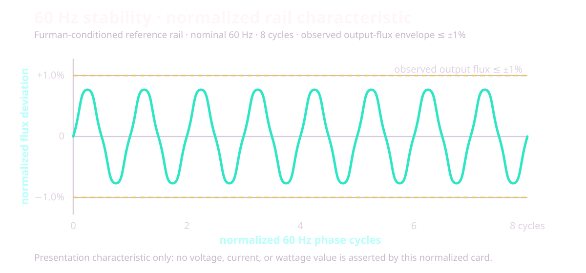

Point the laser. Pull the trigger. That's most of Finally.
Read the installed version in the Lobby. This page documents release 1.0.1 — Quest code 92 / Galaxy code 10092. Store rollouts can lag this manual, so the version shown inside your headset remains the authority.
Installed identity
How this manual applies
Quest · 1.0.1 · code 92
Current release behavior: playlist view carry, the photo slideshow, folder shuffle, the 1.0.1 hardening set below, plus the carried-forward stick Distance + stick-click reset, AUDIO studio, MOVE SUBS, AFR MAX, and soft-retain library.
Galaxy XR · 1.0.1 · code 10092
Current shared controls and source behavior. The Galaxy artifact is built from the same code; device-specific claims stay separate where this page says so.
Any build below 1.0.1
Use only controls present in that installed build. Older manuals and Engineering Receipts remain historical evidence, not proof of code 92.
Any other version
Use this as orientation, then follow that build's in-headset HELP and release notes. A control described here may be absent or changed.
Startup film. Release 1.0.1 embeds the mastered 1920×1080 startup intro: a cleaned black field, a restrained aviation layer, and the final audio hold. The 244-frame / 24-fps film remains ON by default on cold start; HIDE is an explicit Global Settings choice after the first watch.
What this release carries: the Lobby/theme board uses continuous stick and laser-drag scrolling with hard clipping and explicit page affordances. During a drag or flick, the list keeps a bounded compositor scroll window, remaps hit testing analytically, and avoids re-baking the full panel for every laser crossing. The list/cover well is hard-clipped on every frame; Settings and theme panels use a lower redraw/supersample budget, with hover chrome kept separate from full bitmap work. On VR180 / VR360 / fisheye / alpha passthru, stick forward/back remains the same Distance value as the cockpit slider and per-title save; stick-click homes Distance + Zoom to D1.00 / Z1.00 and recenters. These are the current implementation contracts; the headset remains the authority for feel under a particular library, network, and thermal condition.
What 1.0.1 hardened
1.0.1 is a repair-and-polish release on top of 1.0.0. Beyond the new features documented in their own sections — playlist view carry and the photo slideshow — it lands a stability sweep:
Playlist and folder navigation — continuous advance (autoplay, PREV/NEXT, shuffle) and folder back-out paths were stabilized so a fast jump can no longer strand playback or the list.
Blu-ray ISO playback — disc metadata is sanitized before it reaches the native layer, and teardown races on close/stop can no longer wedge a session.
Network sources — SMB connect repairs for dual-stack hosts and Tailscale/CGNAT-class addresses (RFC 6598 shared space now counts as trusted-LAN), with the first trusted DNS answer pinned instead of the whole answer set being rejected.
Haptics safety — the emergency STOP path was hardened: stale accessory writes are re-fenced so STOP always lands last.
Upgrade-safe migration — sources and credentials saved by earlier builds (including pre-gate SMB entries and the legacy Handy key) are grandfathered in place instead of being silently dropped by newer validation.
Two reading lanes: Start here through Bug reports is Daily Use. Engineering Receipts, Theory of Operation, and Deeper are optional appendices; you do not need them to set up a source or watch a title.
The vault is your library. Open a folder to dig in. Open a title to play. Daily browsing and playback stay in VR; source management, document pickers, delete confirmation, and Watch Together can intentionally open Android's flat or system UI.
Your first hour. Finally ships no catalog, so an empty vault is normal. The fastest first frame is one known-good file in Movies/Finally, followed by ↻ SCAN. Add one Android folder or one SMB share next; use Browse instantly on a large NAS instead of waiting for a whole-library index. Posters and metadata can continue filling in after playable rows appear.
Input
What it does
B / Y
Menu / Back is B by default or Y after the optional swap. In a video: quick strip → full cockpit → hidden — never exits the app
Trigger
Click what you point at · summon the quick strip while playing
A
Play / pause
Stick ← →
Seek a video · step through photos
One-controller law. Everything critical in Finally works with one tracked controller. Left-controller buttons are conveniences, never requirements.
First-run missing-file check: a whole-word mono filename tag intentionally hides that title from the vault and 2D library; the footer reports N MONO hidden. Kimono and Monolith do not match, and a title with saved settings is never auto-hidden. Rename the file to show it again.
02 · first run
Guided tutorial
Six skippable cards get you from first launch to a correctly placed picture.
Practice pointing and pulling the trigger on the real target.
Learn where local folders and SMB shares enter the vault.
Move flat content with the physical scene dolly.
Repair projection, stereo packing, and eye order.
Find Dark room, subtitles, and automatic frame-rate matching.
Choose SIMPLE or PRO and start using Finally.
SKIP TUTORIAL and START USING FINALLY both record completion. System Back leaves it incomplete, so it can return after a cold start. Replay it whenever you want from SRC → Quick-start tutorial.
Private by construction. The tour is local, needs no account, and sends no completion telemetry. Quest 3 and Galaxy XR physically rendered all six steps and passed practice/forward/back assertions; those tests deliberately did not press Finish, so a complete human walkthrough remains a separate check.
daily use · quick answers
Daily-use FAQ
Question
Current answer
Can I watch while lying on my side?
Yes. In PRO → SETUP, Tilt follow keeps the picture upright to your face, while Menu level keeps the cockpit gravity-level. The menu and laser remain world-anchored.
Can I use bare-hand tracking without controllers?
Tracked controllers are the supported baseline. Quest does not request the hand-tracking feature. On a platform that exposes its system hand ray/pinch as the OpenXR select action, visible targets may respond—Galaxy XR has user-observed hand-ray use—but grip/stick gestures, menu grabbing, shortcuts, and haptics still require a controller. A complete hand-only matrix is not claimed.
What happens if I remove the headset or switch apps?
Playback pauses so audio does not keep leaking through the speakers, and Finally checkpoints the current resume position. Return to the app and press Play when you are ready.
Can I choose another audio track?
Yes for ordinary ExoPlayer-backed containers. Tap AUDIO for the multi-track list (language chips, remembered preference) and the AUDIO studio — SIMPLE Night soft, or PRO EQ / dynamics / stereo width. The shared path is disabled for prepared ISO/SSIF playback. Finally does not invent a missing dub or ask Plex to transcode one.
Can I load an external subtitle file?
Yes. Start an ordinary video, open the quick strip or PLAY page, and choose LOAD SUBTITLE. Pick an SRT, VTT, ASS, or SSA file up to 4 MiB. Local/SMB (and WebDAV same-folder) sidecars can auto-pick. MOVE SUBS free-drags the caption on the picture; B saves. Stills and the special ISO/MVC path are excluded.
Does Finally support ChloeVibes or .funscript files?
Yes. ChloeVibes is integrated into Finally, so no second app is required. Open GLOBAL SETTINGS → CHLOEVIBES, connect and explicitly ARM a compatible Bluetooth accessory, then use a readable sidecar with the same complete basename as the video. Stroke length/speed caps tame wild scripts. The Handy can use a HandyFeeling connection key (Wi‑Fi) from the same panel family; review and accept the in-app network disclosure before its first cloud request. See ChloeVibes haptics.
Stick moves the girl closer but nothing resets?
On the current 1.0.1 release, stick ↕ is Distance (the slider moves). Stick-click homes Distance + Zoom and recenters. That behavior originated in code 39; on older builds a hidden dolly could ignore the slider — update.
What happens to surround audio?
Finally keeps up to eight-channel tracks eligible, uses headset hardware when available, and falls back to its bundled FFmpeg audio path for AC-3, E-AC-3, and DTS when needed. Android's audio system performs the headset downmix.
Are chapters supported?
Yes when the container exposes them: Blu-ray playlist marks and Media3 multi-period chapter marks show CHAPTER chips (including in SIMPLE). The code-28 resume-plus-authored-seek route remains a historical Quest receipt; DVD menu navigation is still not claimed.
Does HDR work?
A focused 1080p60 AV1 Main 10 HDR10 file reached the hardware decoder and recovered after seek on Quest 3 and Galaxy XR. That is decode-path proof, not a blanket HDR tone-map, output-accuracy, 4K/8K, or every-profile guarantee.
Can Finally cast the movie?
Finally has no in-app Chromecast, host relay, or cloud-casting service. Headset-system casting or recording, when the OS offers it, is outside Finally's media path. Watch Together synchronizes two local copies; it is not casting.
How much battery does it use?
There is no honest hours estimate: codec, resolution, bitrate, Wi-Fi, display mode, and headset firmware dominate. Bench runs were externally powered, so no controlled drain series is claimed. Check the headset battery for long or high-bitrate sessions.
Will progress survive a move or rename?
Readable, seekable local media with a known size of at least 64 KiB can rematch the same bytes by content hash, and *.finally.json sidecars can travel with a title. A move between source types or servers can become a new identity, so keep the sidecar with the title when the transfer matters.
Can I use removable storage?
Use Add videos folder or Add files and grant the volume through Android's picker when the OS exposes it. A removed/re-mounted volume can need a fresh grant. USB optical DVD is a separate, narrower Quest path.
03 · muscle memory
Controls
The full map. B is Menu / Back by default; the optional B/Y swap moves that role to Y.
Action
Input
Menu / back
B by default, or Y after the optional swap. In the lobby it backs out through search, folders, and panels; during video it cycles strip → cockpit → hidden; a photo uses the full cockpit (see The Cockpit)
Click / confirm
Trigger on a visible target. With playback panels closed, Trigger opens the quick strip
Play / pause
A
Mute
Grip + A
Seek
Stick ← → (either hand) · on a photo: previous / next file
Distance (flat + immersive)
Stick ↕ with the menu closed — one canonical Distance value. Flat is a physical panel; VR180 / VR360 / fisheye / passthru lean the scene closer or farther. The cockpit Distance slider tracks and the value saves per title. Cinema range about 0.22–8.0
Zoom (optical / size)
Immersive optical zoom and flat window size live on the PLACE/VIEW sliders and grip+stick size chord — not on free stick ↕. Zoom range up to 6× where the cockpit exposes it
Flat: window size
Grip + Stick ← → — shrink / enlarge in place
List navigation
Stick ↕ with the menu open
Grab-scroll the vault
Hold Trigger on the list and drag — release with speed to coast (see The Lobby)
Prev / next title
Grip + Stick ↓ / ↑
Drag the world (dome)
Hold Grip, then pull that same hand's Trigger and drag — grab-the-world
Y by default, B after the optional B/Y swap — also the Eyes cell on PLAY
Move the menu panel
Point at it + hold Grip + move your hand
Menu pull / push
While grip-holding: Stick ↕ slides it along the ray
Resize the menu
While grip-holding: Stick ← →
Controllers, precisely: bare-hand tracking is not enabled. One tracked controller can point and trigger every critical visible Lobby and cockpit target, including PRO CONTROLS on the quick strip. A, the Menu / Back face button, grip/stick gestures, and controller hover/click haptics remain controller inputs. Optional ChloeVibes / Handy accessory motion is a separate explicitly armed system described under ChloeVibes haptics. Lobby GLOBAL SETTINGS holds a Controller map summary: face B/Y swap, seek-stick invert, and stick-distance direction. Eye swap also has a visible menu control.
What the stick means right now
Current mode
Stick input
Result
Menu or HELP open
↑ ↓
Scroll the current list or article
Video · menu closed
← →
Seek backward or forward
Immersive video · menu closed
↑ ↓
Distance — lean the scene closer or farther (same value as the Distance slider)
Flat video · menu closed
↑ ↓
Distance — move the screen physically closer or farther
Either video · menu closed
Stick click
Full placement reset: D1.00 / Z1.00 + recenter on gaze
Photo
← →
Previous or next file
Grip-holding the menu panel
↑ ↓ · ← →
Push forward sends the panel away, pull brings it in — the same grammar as a flat screen · resize it
Not panel-holding
Grip + ↓ / ↑
Previous or next title
Context wins: panel-holding takes precedence, photos repurpose horizontal seek for album navigation, and the ordinary closed-video map applies otherwise.
Haptics: a hover tick and click pulse on the pointing hand. The SETUP master toggle remains, and a saved HAPTIC STRENGTH slider scales later pulses from OFF to 100%. Quest defaults to 100%; Galaxy XR defaults to 55%. Hard rule: grip away from the panel does nothing — no accidental grabs.
Galaxy XR note. Quest binds the full Touch controller profile. Galaxy XR runs the same map through the standard controller profile — laser, trigger, menu, and transport all behave identically.
04 · the lobby
The Lobby
♡ Finally Lobby — your vault, floating in a neon room (or your real one).
The Lobby is where you land. Titles list in the center; favorites wear a ★; folders glow gold. Aim and trigger to open anything.
The chip row
Chip
What it does
SELECT
Enter selection mode — tap row boxes, then FAV / DEL / HIDE / COLOR act on the whole set. A HIDDEN chip appears when hidden rows exist so you can show or re-filter them
LIST / COVER
Flip the vault between the list layout and the cover-art shelf
↻ SCAN
Rescan your sources for new files — including your saved NAS share, so server-side additions land without leaving VR
SORT
Cycle the eight saved folder orders: A-Z, Z-A, NEW, OLD, BIG, SMALL, LONG, SHORT
FAV
Pin the selected title to favorites
DEL
Permanently delete the selected validated local video after an exact-file confirmation; network, folder, disc, ISO, and cloud targets are refused
RAND
Play a no-repeat random local video. Network, still, audio, missing, and unavailable rows stay out of the deck
SET
Open the responsive ROOMS grid and select a bundled or user room directly (see Worlds)
REAL
Passthrough — the vault floats in your real room. Saved as your default
FIND
Open the in-headset keyboard and search displayed titles—including Stash filename fallbacks—without leaving the Lobby
The wide band under the list carries the four destinations: SRC (sources), CFG (GLOBAL SETTINGS), HELP, and EXIT. GROUP WATCH — private-LAN Host / Join pairing (see Watch Together) — lives under CFG, and Room dim is a CFG preference too.
Search a large vault
Choose FIND, type with the controller-first keyboard, and apply the query. Search is case-insensitive, every word must appear somewhere in the displayed title, and the resulting rows keep the active sort order. Untitled Stash scenes are searchable by their filename fallback. Press Menu / Back—B by default or Y after the optional swap—to close the editor or clear an applied search before the normal folder-back action continues.
Grab the list
The vault scrolls like a phone list. Grab it with Trigger and drag — past a small threshold of travel the press becomes a scroll instead of a click, so aiming at a row and squeezing still just opens it. Release while moving and the list coasts, bleeding off speed like a flick on glass, with a hard stop at each end — no bounce. A press while it's coasting catches the list: it stops under your laser, and releasing never fires the row it happened to land on.
When the vault overflows, a slim scroll bar rides the right edge — a dim neon thumb sized by how much of the list you're seeing. Point at it and drag for an absolute jump, or tap anywhere on the track and the thumb lands under your laser. Stick ↕ still works; it's just no longer the only way.
One honest line while we're here: every list now reaches its final entries — earlier builds carried a capacity bug that hid the last two rows of any overflowing list. 0.3.14 fixed the math.
Check many at once
Press SELECT and every row grows a checkbox on its leading edge. Tap boxes to check rows — checking never opens a title, and the row's open target starts after the box, so the two can't collide. The chip becomes a live count. Rows are remembered by which title they are, not where they sit, so a list that re-sorts under you never re-targets your checks.
One verdict per press. A mixed set gets made uniform, favoring on: if anything checked isn't a favorite yet, ★ FAV favorites the lot; only a fully-favorited set flips off. Same law for HIDE and COLOR — after any press, everything checked agrees, and "select all, press twice" is always a clean clear. It's the same rule your photo app uses, on purpose.
Leaving SELECT clears the checks — an invisible checked row is never allowed to survive and surprise a later press.
The chips explain themselves
Rest the laser on any chip in the bottom rows and the footer describes what it does before you commit — "HIDE · remove checked rows from the list — deletes nothing." No more pressing to find out.
Posters on the rows
Every local title wears a poster — one real frame pulled from ~10% into the video, past the black leaders and intro cards, cached so the vault paints instantly next time. Stereo-packed files are cropped to a single eye first, so a poster is never a double image. Rows still loading show a quiet glyph — and NAS and Blu-ray ISO rows keep the glyph on purpose: pulling megabytes over the network (or spinning up the whole disc stack) just to decorate a list is how library screens start stuttering. The 2D library rows wear the same posters.
Who gets hidden
Files that auto-detect as plain mono — a whole-word mono tag in the filename — are tucked out of the vault and the 2D library, with an honest count in the vault footer: N MONO hidden. Two rules keep this safe: the detector matches whole tags only (Kimono and Monolith never vanish), and a title with your saved settings is never auto-hidden — your choices always beat the detector's. The tag is the switch: rename the file and it's back.
Deleted files clean up after themselves now. A library entry whose local file is gone used to be unkillable — it wouldn't play, and DELETE refused it because there was no file left to delete. As of 1.0.0 it clears on contact: open it and Finally removes the entry (telling you so), press DELETE on it and "already gone" counts as done, or press ↻ SCAN to sweep every such ghost in one pass. One safety stands guard: if the whole storage volume is unmounted, nothing is removed — every file merely looking absent must never erase a library.
Sort a folder
The flat Library has a Sort picker; each Lobby press of SORT advances the same saved choice. Favorites remain pinned and folders remain above videos. Missing size, duration, or date values sort last in either direction, and stable tie-breakers prevent rows from jumping during refresh.
Large-library repair in code 32 and later: A-Z and Z-A now obey the full comparator contract even across thousands of Plex rows. Finally rebuilds the view before saving a new sort choice, so a failed rebuild cannot poison the next launch. The repair keeps the existing library index, Plex source, and credentials.
Lobby chip
Order
Lobby chip
Order
A-Z
Name, ascending
Z-A
Name, descending
NEW
Date added, newest
OLD
Date added, oldest
BIG
Size, largest
SMALL
Size, smallest
LONG
Duration, longest
SHORT
Duration, shortest
“Date added” means when the item entered the Finally vault, not necessarily its filesystem modification date.
Delete one local video
Focus one local video and choose DEL.
Read the exact-file confirmation.
Choose Delete file; Android may show its own final consent surface.
Finally reloads the vault row and root before deletion so a stale selection cannot redirect the action. It fails closed for SMB, FTP, WebDAV, Plex, Stash, folders, DVD, ISO, cloud/server rows, traversal paths, missing roots, or a target that no longer matches the selection. A successful delete is permanent. Clear vault only removes Finally's records and never deletes the media.
Setup from the Lobby
SRC opens the in-room source status and rescan panel. Choose EDIT WITH KEYBOARD when you need the flat Library setup screen, Android pickers, or server forms; Quick-start tutorial replays the guided tour. Lobby CFG (GLOBAL SETTINGS) holds menu level, resume, skip intro, tilt follow, stick direction, seek step, Seek landing (FAST ⇄ EXACT, see Seeking), NAS buffer (LEAN · DEFAULT · BIG · MAX, see Sources & NAS), Room dim, cockpit Menu style (SIMPLE ⇄ PRO), GROUP WATCH, and the dedicated CHLOEVIBES control entry. The same GLOBAL SETTINGS tab is reachable during playback, where it exposes the HAPTIC CONTROL PANEL. HELP opens help in-headset with no title required.
Android's flat or system UI appears only for tasks that need it: source management and folder/document pickers, the external-subtitle picker, local-file delete confirmation, and Watch Together setup. Return to the Lobby when that task finishes.
EXIT leaves to your headset home — labeled EXIT → QUEST on Quest and EXIT → HOME on Galaxy XR. The exit path is single-flight with a harder OpenXR teardown so Meta home / Loft can reclaim the headset. Lobby worlds reload after stop; a failed 8K environment load falls back to VOID instead of leaving a broken room. On the empty first run, open SRC, or drop files in Movies/Finally and use ↻ SCAN.
05 · while playing
The Cockpit
Press Menu / Back—B by default or Y after the optional swap—during playback: quick strip first, full cockpit second, gone third.
The Menu / Back cycle
While a video plays, the Menu / Back button—B by default, Y after the optional swap—walks a three-step cycle: nothing open → quick strip → full cockpit → hidden. The strip spawns low, below your eyeline — a glance down, not a wall of controls in your face. A second press grows it into the full cockpit in place; a third puts everything away. A bare Trigger pull summons the strip too, so the common moves are always one squeeze away.
Photos skip the strip — Menu / Back opens the full cockpit directly, because transport means nothing to a still. In the lobby, the same button backs out through panels and folders before hiding the root vault.
The quick strip
The strip carries the moves you actually make mid-video: the timeline scrubber (full drag-seek; local/SAF titles can show storyboard tiles while scrubbing), -30s / -5s / PLAY / +5s / +30s (the small step is adjustable in SETUP), ■ STOP, speed, volume, mute, PREV / ◆ LOBBY / NEXT, SHUF (no-repeat shuffle through the current folder), ◀ CLOSER / FARTHER ▶, and the DARK / ROOM toggle. In SIMPLE mode, point and trigger the always-visible PRO CONTROLS target to promote the strip into the full cockpit without another Menu / Back press. In PRO mode the strip adds A·B·C·D loop chips and STATS. If a network stream stalls, it raises itself with a REBUFFERING banner that shows buffer seconds · fill % · MB/s · network class, then stands back down when the flow recovers — details in Sources & NAS.
SIMPLE and PRO
The full cockpit ships in SIMPLE mode: four tabs — PLAY · VIEW · GLOBAL SETTINGS · HELP — with the essentials. PLAY keeps the transport, speed, volume, mute, Eyes, passthrough, PREV/NEXT, and the core lens row (AUTO · VR180 · VR360 · Flat · SBS · OU). VIEW keeps scene height, distance, zoom, and screen curve, plus the resets and the AUTO escape hatch.
Tap the PRO chip in the tab row and the full six-tab cockpit unlocks; BASIC brings SIMPLE back. Your choice is saved, and it is also flippable from lobby GLOBAL SETTINGS → Menu style. SIMPLE hides the pro tools — A–B loops, the MKX/FE190/VRCA lens profiles, the chroma/alpha keying suite, and fine placement sliders — but GLOBAL SETTINGS and HELP stay reachable in both modes.
Area
SIMPLE
PRO
Tabs
PLAY · VIEW · GLOBAL SETTINGS · HELP
PLAY · PLACE/EYES · COLOR/KEY · SETUP · GLOBAL SETTINGS · HELP
The same core row plus MKX, FE190, VRCA, and fine placement
Loops and live stats
Hidden (chapters still show when the file has them)
A–B–C–D loop controls and Stats HUD
Audio
AUDIO list + SIMPLE Night soft studio
Full AUDIO studio: EQ, dynamics, stereo width
Color and keying
Hidden
Color grade, four-color chroma key, and packed alpha
Switch modes
PRO/BASIC in the tab row, or lobby CFG → Menu style; the choice is saved
The six PRO pages:
PLAY
The transport. Timeline scrubber (drag-seek; storyboard tiles on local/SAF when available), -30s / -5s / PLAY / +5s / +30s, ■ STOP, ◆ LOBBY to return to the lobby, speed, volume, mute, AUDIO (track list + studio), SUBS / LOAD SUBTITLE / MOVE SUBS, Eyes (L·R ⇄ R·L), the preset AUTO/MANUAL toggle, passthrough, CHAPTER chips when marks exist, A·B·C·D loop marks (PRO), PREV/NEXT/SHUF, and the quick lens row (VR180 · VR360 · Flat · SBS · OU · AUTO). On a photo, the transport cluster becomes the slideshow controls — START SLIDESHOW on the PLAY chip, PHOTO TIME where Speed sits, and TRANSITION beside it (see Photos).
SBS and OU are toggles: press the lit one and the title drops back to 2D — the lit cell even says so: again = 2D. Stereo always has a one-press exit, in SIMPLE and PRO alike.
AUDIO studio
Tap AUDIO during ordinary playback. SIMPLE keeps Night soft, volume, mute, and the multi-track list (preferred language is remembered). Tap PRO inside the studio for Bass / Mid / Treble EQ, Dynamics (Off / Soft / Night / Punch), stereo width, and Reset FX. Effects fail closed if the Android audio chain cannot attach. ISO/SSIF prepared routes keep the shared AUDIO path disabled.
PLACE / EYES
Where the scene sits and how your eyes meet it. Sliders for scene height, move scene (left/right), distance (about 0.22–8.0 for cinema seats), zoom (up to 6× where exposed), depth position (stereo convergence), eye height align, scene tilt, scene roll, and screen curve (flat titles only — 0 to ~100° of cylindrical wrap, saved per title). Plus flip left/right, flip up/down, Reset place + eyes, and the full manual lens row — see Lenses.
These sliders are live twice over: every cockpit slider repaints while your trigger drags it, and tilt, roll, and Distance also follow grip and stick gestures in real time — push the stick and the Distance readout moves with you. Stick-click homes Distance + Zoom. Roll the dome with your wrist and SCENE ROLL moves with you, instead of showing a stale value that later snaps the scene back. During continuous playback, zoom and distance also carry forward onto untuned titles — see view carry.
COLOR / KEY
A full color grade: brightness, contrast, gamma, saturation, hue, and warmth — six proper sliders with a one-tap Reset. The grade touches the video only (the menu panel stays neutral) and starts clean each session. That reset is deliberate: grade is a temporary viewing correction, not per-title metadata, so a fix for one session cannot silently tint later content or diagnostics. Projection, placement, and resume remain sticky where documented; grade does not. Below them, the entire passthrough keying suite: master passthrough toggle, packed-alpha matte, four-color chroma key with per-color edge controls. Detailed in Your room.
SETUP
Seek step size, menu distance and size, theme, menu spawn (at gaze or fixed origin), default-SBS-for-180 toggle, skip intro, resume on/off, stick distance direction (pull = smaller by default, flippable), wrist-roll dome tilt, the haptics master plus saved OFF–100% strength, subtitle delay and size, and the Stats HUD toggle — plus the lying-down suite: tilt follow rolls the picture with your head so it stays upright to your face instead of the room (lie on your side; the movie comes with you — menus and laser stay world-anchored), and menu level makes the cockpit spawn gravity-level instead of matching your head tilt.
GLOBAL SETTINGS (highlights)
Reachable from the Lobby (CFG) and during playback. Beyond the older resume / skip-intro / NAS buffer / menu-style controls:
Default projection for untagged files — cycle Flat / VR180 / FE190 / Fisheye / MKX200 / MKX220 / VRCA220 / 360°. Filename tags and strong frame geometry still win when present.
Display refresh — cadence-aware AFR, plus optional MAX = highest advertised headset rate (about 120 Hz on Quest 3 when available; Galaxy still floors below 72 Hz).
Controller map — face B/Y swap, seek-stick invert, stick-distance direction; a short summary of the live binding.
Button glow — LOW / MED / HIGH for cockpit chrome intensity.
Clear HTTP cache — empties the progressive HTTPS disk cache (512 MB LRU) used by browser/direct progressive paths.
CHLOEVIBES / HAPTIC CONTROL PANEL — Bluetooth toys and The Handy connection-key path.
Subtitles
SUBS cycles OFF and the tracks exposed by the current container. Embedded tracks say EMBEDDED; sidecars and manually selected files say FILE. Ordinary local and SMB videos can automatically discover sibling .srt, .vtt, .ass, and .ssa files that share the complete video stem, optionally followed by a language label. WebDAV same-folder sidecars can auto-pick too. Subtitle auto-pick prefers language when several candidates exist; an explicit user OFF choice still wins.
LOAD SUBTITLE on the quick strip and PLAY page opens Android's document picker during ordinary video playback. Choose an SRT, VTT, ASS, or SSA file up to 4 MiB for a local, SMB, Plex, WebDAV, FTP, Stash, or DLNA title. Finally copies the selection into private cache, rebinds the same movie, selects the new FILE track, and resumes only if it was playing before the picker opened. The original URI is not persisted or logged, and the attachment lasts only for that playback session. Stills and the special ISO/MVC route do not offer this control.
MOVE SUBS free-drags the caption on the picture with the laser; press B to save the placement. In PRO → SETUP, Subtitle look cycles saved CINEMA, CLEAN, and HIGH CONTRAST styles; Sub delay spans −10 to +10 seconds and Sub size spans about 75% to 300% (larger default than older builds). Resizing no longer freezes controllers. There is no independent subtitle-depth control. The ISO route reports SUBS · ISO N/A because text and PGS rendering are deliberately disabled there.
Dark room, ROOM DIM and AFR
DARK ROOM gives flat movies a plain black surround; ROOM VISIBLE restores passthrough. ROOM DIM is a saved 0–100% background-luminance slider in 5% steps. It dims bundled/procedural rooms, the flat-video background, and passthrough—including what shows through chroma/packed-alpha holes—without dimming the movie, still, subtitles, or cockpit UI.
Automatic frame-rate matching sends Android a seamless display-rate hint based on normalized source cadence and playback speed. Common mappings include 24→72, 30→90, 40→80, 60→120 when advertised, and 25 / 50 / 100 → 100 Hz when the headset advertises 100. Optional MAX forces the highest advertised rate instead of cadence matching. The headset still chooses the final display mode. AFR is not frame interpolation: it never invents motion or converts a low-frame-rate file to 60 or 90 fps. Verify the live rate in Stats HUD.
HELP
The in-headset version of this manual: subjects on the left, article on the right, stick ↕ scrolls. It also includes two extra chapters — THEORY (teal) and DEEPER (green). Both are reproduced below in full: start with Theory of Operation, then enter Deeper.
Stats for nerds
PRO only. Tap STATS on the quick strip's header (or PRO → SETUP → Stats HUD) and the strip's lower half becomes a live readout: source class, video codec with resolution @ fps, decoder and dropped frames, audio codec, color info, buffer seconds against target, NAS fill % with live MB/s, position / speed / state, active lens + stereo, current Android display mode, source cadence, target refresh, and cadence multiple. It refreshes once a second while open, the scrubber and transport stay live above it, and it never appears on photos.
Readout
Exact meaning
72.0 Hz LOCKED
Android currently reports 72.0 Hz and it is an integer multiple of effective content cadence within 0.5%
72.0 Hz · TARGET 90.0 Hz · NOT LOCKED
90 Hz is a compatible requested/supported target, but Android still reports 72 Hz
CADENCE 3:3
Each content frame can occupy three display refreshes
CADENCE MISMATCH
The reported display rate is not an integer multiple
CADENCE UNKNOWN
The stream did not provide a usable frame rate
For example, 23.976-fps cinema at a reported 72 Hz qualifies as a 3:3 lock. LOCKED never means “requested” or merely “supported.”
Nothing decorative. A cockpit toggle must never be a placebo — if a switch is visible, it does something real. That's a design law, not a promise.
05A · optional accessory control
ChloeVibes Haptic Control Panel
ChloeVibes is built directly into Finally. There is no second app to install or keep running.
Local media timing; local Bluetooth control. Finally reads a matching .funscript. Lovense-class Bluetooth control is direct; The Handy cloud path is disclosed separately below.
Research lineage. The broader ChloeVibes program was developed by David Lombardo with particular emphasis on ADSR (Attack, Decay, Sustain, Release) haptic envelopes: shaping tactile response over time instead of treating a motor as a blunt on/off switch. See the ChloeVibes ADSR technical reference. Finally's current sidecar path follows the authored .funscript plus the safety gates below; it does not claim to run ChloeVibes' complete live-audio ADSR engine.
Connect and arm
In the Lobby, open CFG (GLOBAL SETTINGS) → CHLOEVIBES.
Choose SCAN. Android may ask for Nearby Devices / Bluetooth permission the first time.
Select and connect the intended accessory, confirm its displayed name, and set TOY STRENGTH.
Choose ARM only when you are ready for accessory output.
Play a video with a readable sidecar that shares its complete basename: Movie.mp4 matches Movie.funscript.
During playback, open GLOBAL SETTINGS → HAPTIC CONTROL PANEL for connection/script status, STOP, ARM / DISARM, TEST, and strength. TOY STRENGTH controls the accessory; controller HAPTIC STRENGTH remains a separate setting for menu hover/click pulses. Max stroke length and max stroke speed caps tame wild funscripts so a single authored peak cannot pin the motor.
The Handy (Wi‑Fi key path)
The same panel family can drive The Handy over Wi‑Fi using a HandyFeeling connection key (clipboard paste is supported when the OS exposes it). Before the first request for a new key, Finally shows a controller-reachable disclosure with CANCEL and CONNECT. CONNECT sends the key, source IP/network-request metadata, connection/status checks, device setup, and a rest-position command to HandyFeeling (operated by Ohdoki AS) over HTTPS. CONNECT can physically reposition The Handy before ARM; keep clear. While connected and ARMED, script playback or TEST sends motion position/duration; STOP or disconnect can send mode/stop commands even when not armed. During script playback, motion values and cadence come from the local .funscript; the raw script, title, media path, and video are not sent. Coldbricks receives none of these requests. See the Finally privacy policy and The Handy privacy policy. Bluetooth Lovense-class devices remain on the direct scan/connect path above. Always STOP / DISARM before troubleshooting either path.
STOP and bounded TEST
STOP is immediate and does not require the panel to be armed. Use it whenever output is unexpected, then physically disconnect the accessory before troubleshooting.
TEST requires an already connected and armed accessory. It emits exactly one 300 ms pulse, then automatically sends STOP and DISARMS. Repeated presses cannot stack pulses or extend the safety window, and TEST is unavailable while ordinary playback owns accessory output.
Pause, buffering or lost playback ownership, leaving the player, disconnecting the accessory, or closing the session invalidates motion and follows the stop/disarm safety path.
Private by design
Bluetooth scan results, accessory identifiers, connection state, and .funscript timing stay on the headset. Finally does not send that information to Coldbricks and uses no ChloeVibes cloud backend.
The separate The Handy path uses Ohdoki's HandyFeeling service as disclosed immediately before CONNECT. Forget Handy key removes the local key; it is not a request to delete Ohdoki server records.
06 · the projection brain
Lenses & projection
Filenames hint the shape. Untagged files use the real frame geometry. Your fixes stick per title — forever.
Every VR video is a flat rectangle of pixels that has to be wrapped back into a world. Get the wrap wrong and the scale, depth, and edges all lie to you. Finally reads the filename, checks the frame, picks a projection — and when it can't know, gives you manual overrides that persist.
The lens family
Lens
FOV
What it is
VR180
180°
Equirectangular half-dome — the standard stitched VR180 format
VR360
360°
Equirectangular full sphere
FISHEYE
180°
Plain circular fisheye disk — unstitched lens image
FE190
190°
190° fisheye — SLR originals and the Canon lens family
MKX200
200°
SLR MKX lens (plus a RAW variant)
MKX220
220°
Wider MKX lens
VRCA
220°
VRCA lens correction
Flat
—
A 2D panel in your room — optionally curved, never warped
180 vs 190 — yes, they're different. Same fisheye disk, different lens coverage. A 190° file played on a 180° mesh looks subtly zoomed-in with warped edges; the reverse looks shrunken. When something's off but you can't name it, audition the lens row.
Canon RF 5.2mm dual-fisheye (rf52) exports are treated as stitched VR180 — Canon's EOS VR Utility outputs equirect, so that's where those files belong.
FULL versus HALF stereo packing
Choice
Use it for
FULL SBS
A wide frame containing two full-width eye images side by side
HALF SBS
A normal 16:9-style 3D movie frame with the two eyes squeezed side by side
FULL OU
A tall frame containing two full-height eye images top/bottom
HALF OU
A normal-height 3D movie frame with the eyes squeezed top/bottom
Choose the packing that matches the file. Tap an active stereo choice again for mono/2D; AUTO returns control to detection. If depth looks inverted, swap eyes instead of changing FULL to HALF.
Flat-screen aspect repair
For a FLAT title, use ASPECT only after stereo packing is correct. It cycles AUTO → 16:9 → 4:3 → 2:1 → 2.40:1 → 1:1 → 9:16. AUTO uses decoded geometry, pixel-aspect ratio, and packing. A fixed value changes screen shape after eye unpacking; it does not change eye order, lens, projection, or AUTO/MANUAL detection. ASPECT is intentionally disabled for VR180, VR360, and fisheye projections.
When there's no tag at all
A filename tag is a promise, and Finally keeps it — tagged 180 files keep the ecosystem's SBS convention. An untagged file first consults your saved Default projection in GLOBAL SETTINGS (Flat / VR180 / FE190 / Fisheye / MKX… / 360°) when you want a house default, then falls back to a careful geometry guess: the frame is only eye-split when halving it actually yields two roughly square eyes (the classic 2:1 full-SBS dome). Portrait video is never VR. An ultra-wide frame (32:9-class) resolves to a flat 3D SBS screen — that shape is a movie pack or a monitor capture, never a hemisphere. And an odd, non-standard aspect plays mono instead of being torn in half — a wrong mono is watchable; a wrong eye-split is soup. Your per-title manual override still beats everything.
AUTO, MANUAL, and the consent card
Finally's override system exists to kill a disease other players have: silently forgetting your fixes, or silently fighting the filename. The rules:
AUTO (default): identity is re-derived from the filename and frame every open — detector improvements and renames stay live.
The first big manual change on a tagged file asks once: OVERRIDE(manual settings for this file) or KEEP AUTO(follow the filename preset).
Choose OVERRIDE and your settings beat the filename forever — surviving reopens, rescans, and app updates.
AUTO leads both lens rows as the escape hatch — one tap hands the file back to the detector. Nobody gets trapped in MKX land.
07 · reference
Filename tags
Deo-compatible and then some. Tags are case-insensitive; separators are _ - . space ( ) [ ].
Projection / lens
Tags
Result
180vr180180x180
VR180 equirect
360vr360
VR360 equirect
fisheye
Fisheye 180°
fisheye190fe190
Fisheye 190°
mkx200 · mkx200raw
MKX 200° (raw variant kept distinct)
mkx220
MKX 220°
vrca220vrca
VRCA 220°
rf52rf5.2canonrf52dualfisheye
Stitched VR180 (Canon workflow)
flat2d
Flat panel
fb360
VR360 (Facebook spatial-audio marker)
Stereo packing
Tags
Result
sbslr3dhsidebyside
Side-by-side
rl
SBS with swapped eyes (Deo convention: right eye in the left half)
outbtab3dvoverunder
Over-under
bt
Over-under, swapped eyes — unless it's sitting next to a colorimetry token like bt709 / bt2020, which don't count
hsbshalf-sbs · houhalf-ou
Half-width / half-height variants
mono
One image to both eyes. Whole-token only — Kimono and Monolith are safe
Untagged fisheye-family files default to SBS — that's how the ecosystem ships them.
Extras
Tags
Result
_alphapassthrough
Passthrough hint — arms the packed-alpha / chroma path
flipfliph · flipv
Horizontal / vertical flip
08 · your library
Sources & NAS
Local folders and SMB are first-class. The current release also has nearby SMB/DLNA discovery plus bounded FTP, WebDAV, Plex, Stash, DLNA, and direct-link paths.
The zero-setup path
Drop files into Movies/Finally on the headset and hit ↻ SCAN. Done.
Folders and files
The 2D library (reached via FOLDERS) adds any folder with ＋ Add videos folder — and it chains: Android's picker grants one folder per round, so after each scan lands Finally asks "add another?" and relaunches the picker until you're done. Two taps per extra folder, not a hunt for the pill. ＋ Add files is multi-select — long-press or tap several in the system picker and they land together, each checked for compatibility, with one summary at the end. Sidecar import/export lives here too. Clear vault removes library rows only — it never deletes files on disk or NAS.
Find nearby sources
In the 2D source-setup panel, choose 🔎 FIND NEARBY SOURCES. Finally runs a bounded Wi-Fi search and labels results honestly as SMB SERVER or MEDIA SERVER. A discovered DLNA/UPnP server can prefill its setup and browse path. A discovered SMB host prefills the address; you still sign in and choose a visible SMB2/3 share when the server permits enumeration, or type the share name manually. Results stay in first-seen order so a row cannot jump away from a controller press. Manual SMB and DLNA entry always remain available when a router, firewall, VPN, or server blocks discovery.
NAS / PC share (SMB)
Finally treats SMB2/3 as a first-class library source — stream straight off your PC or NAS over Wi-Fi, no copying.
On your computer, share a folder (Windows: Properties → Sharing).
Put some videos in that folder.
Note the PC's local address (shown here as NAS_IP) and the share name (for example Media) — not the full path.
Headset and PC on the same Wi-Fi / home network.
Turn off any VPN on the PC if connect fails.
Then: 2D library → ＋ Add NAS share → host, share name, optional Folder (for example media/vr), username + password, and normally port 445. Accepted address forms include a hostname, local IPv4, UNC path, or smb:// address. Put the Synology Shared Folder name in Shared folder and any File Station subfolder in Folder.
Press Test first. It signs in and lists one folder without recursively walking the source. Then choose Browse instantly for an immediate folder snapshot or Index entire source for resumable background discovery. Browsing does not wait for a 45-TB share to finish indexing. Credentials stay on the device in source-specific protected storage and are never exported in library metadata.
Share name, not path. The most common connect failure is typing C:\Media where the share name goes. Use the short name only. Second most common: a VPN on the PC eating local discovery.
Big files welcome. Finally range-streams multi-GB videos over compatible SMB2/3 servers instead of loading the whole file. Version 0.3.9 fixed a specific large-offset failure that could stop titles beyond 2 GiB; sustained playback still depends on the server, Wi-Fi, bitrate, and exact media stream.
What the scan tells you
Scans report what they skipped instead of silently dropping it. Large recursive scans run in deterministic bounded pages and retain a continuation token, so interruption or retry does not force a restart. If a page, depth, or budget boundary is reached, the report says the index is incomplete and names the remaining/blocked areas rather than pretending the source is complete. A retained deterministic regression covers 54,321 files in 3,400 folders across three resumable pages; that is a host-test boundary, not a promise about every NAS or router. NAS housekeeping folders (@eaDir, #recycle, dot-folders and their cousins) are pruned by design, and one locked folder does not kill the rest of a scan.
Network scans also skip music album art automatically (cover.jpg, folder.jpg, fanart, and any thumbnail-sized still) — a share with a music library won't flood your vault with sleeve scans. Folders and files you pick directly keep every image you chose — even one named poster.jpg: locally, only thumbnail-sized files (under 256 KB) are skipped, a file whose size can't be read is never filtered, and the name-based art net stays NAS-only.
Rescan without leaving VR
The vault's ↻ SCAN re-walks your saved NAS share along with the local sources. Dropped new files on the server mid-session? One chip, headset stays on, and they're in the vault.
Soft-retain on complete rescans: for SMB / WebDAV / FTP / Plex / Stash / DLNA, titles that disappear mid-walk keep their resume position and favorites instead of being hard-deleted while the scan is still finishing. When the file is truly gone, later cleanup can still drop the row — but a flaky page no longer wipes your place in a series.
Edit / Rescan / Remove: long-press or open the source actions for Plex, FTP, WebDAV, Stash, DLNA, and XBVR. The action list must show all three choices (an older dialog bug could hide everything except Cancel). Removing a source deletes Finally's record and vault rows for that source — never the server's files.
The NAS buffer
Lobby CFG → NAS buffer cycles LEAN · DEFAULT · BIG · MAX — how far a network stream reads ahead of playback. Bigger rides out longer Wi-Fi dips before the REBUFFERING banner would ever appear; the cost is more memory and cache space on the headset. DEFAULT is the shipped profile. The setting applies from the next title you open — a title already playing keeps the buffer it started with.
The network reservoir pipelines bounded read-ahead, coalesces short server reads, cancels in-flight work on close, and handles far seeks without unbounded hot memory. Its deterministic jitter gate consumes one second at 150 Mbps and then performs a far seek inside the configured caps. That proves the buffer logic, not that a particular Wi-Fi link or spinning disk can sustain 150 Mbps.
When the stream stalls
NAS playback narrates itself. While a network title loads, the vault shows a real buffering percentage — the actual readahead fill, not a spinner. If the stream stalls mid-play, the quick strip raises itself with a REBUFFERING banner that reports buffer seconds · fill % · MB/s · network class (no silent black dome), then hides again once the flow recovers. In Stats HUD, compare sustained live MB/s against content bitrate: a negative margin predicts repeated buffering even when a short speed test looks fast.
Progressive HTTPS cache: browser/direct progressive HTTPS paths use a 512 MB on-device LRU disk cache. Clear it from GLOBAL SETTINGS → Clear HTTP cache if a stuck partial download is poisoning retries.
If a video can't play at all, the reason lands on the vault panel as a bold amber alert band, in plain language: corrupt file, unsupported codec, no permission, file missing, or "NAS stopped responding." A server that's connected but frozen is declared dead in about 20 seconds — no eternal hourglass. A network that drops out entirely gets a ~45-second self-heal window: Finally keeps reconnecting, and if the network comes back in that window, playback resumes by itself.
FTP, WebDAV, Plex, Stash, DLNA, XBVR & direct links
Source
Current boundary
FTP
Passive binary FTP on a trusted LAN. Plain FTP is unencrypted; no FTPS/SFTP, ISO, or thumbnails. Edit / Rescan / Remove are first-class
WebDAV
Configure, validate, browse, index, and range-read a user-supplied collection. HTTPS PROPFIND can follow safe redirects; same-folder subtitle sidecars auto-pick. Ranged media GETs may follow a bounded HTTPS handoff while preserving Range and stripping credentials at a new origin; malformed or ignored ranges still fail closed
Plex
Direct Play the original Part from a user-supplied local server and token; no transcoding request, cloud login, or hosted relay. Large libraries retain all eight safe sort modes. Token can be updated in place; Remove is visible again
Stash
Page scenes and open native stream identities from a server/API key you supply. Display order is nonblank scene title → sanitized filename → opaque scene-ID fallback; Finally supplies no catalog
XBVR
First-class Lobby SRC entry: add a local XBVR server, browse multi-title catalog sessions, and optionally pull matching funscripts for ChloeVibes when the server exposes them. Empty/HTML diagnostics stay honest when the endpoint is wrong
DLNA / UPnP
Discover or manually add a trusted-LAN MediaServer, browse its ContentDirectory, and range-read compatible media. Server behavior varies; no Internet discovery, transcoding, or universal DLNA claim
Play link
Compatible direct HLS, DASH, SmoothStreaming, or RTSP media; not a general browser and does not bypass login, DRM, cookies, or blob-only page logic
Seven short setup recipes
Nearby: Sources → Find nearby sources. Select an SMB server or DLNA media server to prefill the appropriate setup form; use manual entry if nothing answers.
FTP: Sources → Add FTP server. Enter a name, host/IP, port (normally 21), server folder, username, and optional password; choose Connect & scan. Use only passive plain FTP on a private LAN.
WebDAV: Sources → Add WebDAV. Enter the collection URL plus username/password, then Connect & scan. Prefer HTTPS; acknowledged HTTP is limited to a trusted private address.
Plex: Sources → Add Plex. Enter the local Plex Media Server URL and its X-Plex-Token, then Connect & scan. Finally Direct Plays the original Part and does not request transcoding.
Stash: Sources → Add Stash. Enter the Stash base URL and API key, then Connect & scan. Finally reads bounded GraphQL scene pages; rescan to replace blank-title scene numbers with filename fallbacks.
XBVR: Sources → Add XBVR. Enter the local XBVR base URL (and credentials if required), then connect. Browse titles from Lobby SRC; funscript download is optional when the server offers it.
DLNA: Sources → Add DLNA server. Use a discovered device or enter the trusted-LAN description URL, validate it, then browse or index its ContentDirectory.
WebDAV compatibility boundary: Connect & scan uses collection PROPFIND and can follow safe HTTPS redirects to the final collection. After listing succeeds, ranged media GETs can follow at most five HTTPS handoffs. Finally accepts exact or server-proven end-of-file 206 Content-Range replies, including chunked partial bodies. It keeps authorization only on the original origin and rejects HTTP downgrade, URL credentials, loops, excessive hops, malformed ranges, or a full 200 reply that ignored Range. A server that cannot meet that contract is reported as incompatible instead of feeding wrong bytes to the decoder.
WebDAV, Plex, Stash, and XBVR default to HTTPS when you supply an https URL. Using acknowledged HTTP or plain FTP exposes credentials and media to the local network, so keep those modes on a private LAN you control. Removing a source deletes Finally's record and vault rows, never the server's files.
What plays
Video:mp4mkvmovwebmavim2tstsmpgvob3gp and friends — plus decrypted Blu-ray iso images, which play as discs (see Blu-ray ISO). Stills:jpgpngwebpheicavifbmp and friends. wmv / asf are deliberately not listed — the headset ships no decoder for them, so they could never play; a library row that can't play is a lie. Dead entries from older versions clean themselves up on first launch.
Hardware decode up to 8K where the headset and exact stream allow. A focused Quest 3 gate opened an 8192×4096/30-fps HEVC Main 10 MKV at about 156.7 Mbps with AAC, embedded PGS, chapters, and deliberately conflicting stereo metadata; it proved first frame, track exposure, seek, another rendered-frame callback, and resumed clock advance—not a long thermal soak or blanket subtitle/stereo approval.
Retained physical first-frame and seek-recovery proof covers 1080p60 AV1 Main 8 and Main 10 HDR10 on Quest 3 and Galaxy XR using the exposed hardware decoder; it is not an 8K AV1, HDR-output-accuracy, network, or long-soak claim. Audio decodes in hardware when possible and falls back to FFmpeg software for AC-3, E-AC-3, and DTS. Sidecar notes (*.finally.json) carry projection, preferences, and resume position with the title, matched by content hash or path.
09 · discs
Blu-ray ISO, MVC & physical DVD
The current 1.0.1 release (Quest c92 / Galaxy c10092) carries a narrow, explicit set of decrypted H.264/MVC routes at 1.0×. Quest retains production-route receipts from code 28 and earlier; those are historical device evidence. This release has not received a complete c92/c10092 MVC, SMB, or WebDAV device matrix, so the route contract and the measured acceptance boundary stay separate.
Supported today / not today
Supported by the current route contract
Not claimed for c92/c10092
Quest local, complete decrypted 3D Blu-ray MVC/SSIF ISO: zero start, nonzero resume, and authored chapter/indexed seek through the production MVC/OpenXR route
AACS or other protected-disc decryption; BD-J menus; every authored disc or playlist
Quest local standalone .ssif through PlayerFactory, Chloe MVC Engine 1, and separate per-eye OpenXR presentation
Standalone SSIF resume/seek breadth, network SSIF, or feature-length endurance
Quest local genuine combined-track MVC .mkv/.mk3d through the same production route
Every file merely named MKV/MK3D; a genuine MVC dependent view is required
Eligible decrypted MVC ISO over configured SMB or a compatible WebDAV collection remains a source/build product path
No fresh c92 SMB fixture was physically rerun; WebDAV ISO is source/host validated without a live-server or on-head receipt; the Quest code-27 SMB receipt is historical, and neither route is a current Galaxy physical claim
Galaxy c10092 carries the shared routes through the current source/build/artifact contract
No c10092 Galaxy ISO/SSIF/MKV physical route matrix is claimed; retained code-10027 local-ISO results remain historical and are not promoted by the new artifact
Keep MVC at 1.0×. Speed changes are outside the MVC contract. The exact Quest ISO physically passed resume at 12 seconds and an authored/indexed seek to 40 seconds. The standalone SSIF and direct MVC MKV proofs are clean start-to-completion production-route gates; their resume/seek breadth is not inferred.
Decrypted Blu-ray ISO
Drop a decrypted BDMV ISO into a local folder, SMB share, or compatible WebDAV collection and it appears in the vault like any other title. Finally walks UDF, resolves a playlist, and presents compatible base video/audio through the normal player. Remote ISOs stream in place; the image is not copied to the headset. The WebDAV random-access route is source/host validated but has no current live-server or on-head acceptance receipt. FTP, Plex, Stash, and DLNA ISO are refused. An incomplete image is refused with a plain-language card.
No decryption bypass. AACS-protected Blu-rays do not play. Finally contains no AACS keys or implementation. The ISO must already contain plaintext media you are authorized to use.
Using the MVC route
The narrow path is named Chloe MVC Engine 1. It decodes MVC video through edge264 (BSD), uses FFmpeg 8.1.1 (LGPL) for BDAV/audio support, and submits separate decoded eye views through OpenXR.
On Quest, open a complete decrypted MVC Blu-ray ISO, standalone .ssif, or genuine MVC .mkv/.mk3d from a granted local source. An eligible decrypted ISO can also come from configured SMB or a compatible WebDAV collection, with the current source/host and device boundaries above.
Keep speed at 1.0×.
For an authored ISO, use Resume and ◀ CHAPTER / CHAPTER ▶ when marks are present. Quest retains exact code-28 proof for nonzero resume and a later indexed restart; code 33 does not silently inherit that device result.
For standalone SSIF or MVC MKV/MK3D, begin at the start unless you are deliberately testing beyond the proven boundary.
An incomplete MVC layout, non-1.0× speed, unsupported target, or runtime health failure stops MVC promotion instead of displaying stale or unpaired eyes. Where a valid AVC base view exists, Finally can continue in 2D; otherwise it reports the unsupported path. ISO subtitle rendering remains disabled.
In code 32 and later, stopping MVC or leaving the app requests shutdown immediately. Decoder joins, blocked remote reads, and source closure finish on a serialized background cleanup lane, so the UI thread does not wait for the old session. A generation guard prevents stale cleanup from stopping a newer movie.
Optional receipts: exact code-28 route results and the retained code-27 timing, A/V, SMB, and Galaxy measurements are in Engineering Receipts. They stay out of the first-use instructions so “how to open it” is not buried under lab telemetry.
USB DVD-Video on Quest
Connect a compatible mobile optical drive to Quest through a data-capable USB-C/OTG path; provide external power if spin-up is unreliable.
Insert a DVD-Video disc.
Open Sources → Open DVD / VIDEO_TS → USB DVD drive · direct from disc and grant Android USB permission.
Choose a discovered title set. Finally validates clear sectors before playback.
Play, pause, and seek normally on an admitted title.
One Quest 3/mobile-drive/clear-disc route physically traversed USB mass storage and SCSI, found ISO9660 VIDEO_TS, rendered MPEG-2 720×480 with AC-3 stereo, sought, rendered again, and resumed. This does not claim CSS decryption, menus, complete chapter/title navigation, every UDF-only layout, long endurance, or Galaxy XR optical playback.
Posters: ISO rows keep the glyph placeholder so the vault never spins up the entire disc stack just to decorate a list row.
10 · two headsets
Watch Together
Synchronize two supported headsets on one private LAN. Each headset plays the exact same local media bytes.
Happy path — the same bytes on both headsets
Put the byte-identical file on both headsets and connect them to the same private LAN.
On the host, open that file and choose GROUP WATCH (under Lobby CFG) → HOST A ROOM.
On the follower, choose JOIN ROOM and enter the room code; use the displayed private IP:port if discovery is blocked.
Compare the complete pairing code on both headsets and accept only when every character matches.
Select the matching file if asked. The host then controls play, pause, and seek.
A matching filename is not proof of matching media; the bytes must be identical.
Host
Open the title, choose GROUP WATCH, then HOST A ROOM.
Give the follower the displayed room code. If discovery is blocked, also give them the displayed private IP:port.
Compare the complete pairing code aloud and choose CODES MATCH only when both headsets agree.
The host owns play, pause, and seek while the room is active.
Join
Make the byte-identical file available on the second headset.
Choose JOIN ROOM, enter the room code, and use the direct IP:port fallback when multicast discovery is unavailable.
Compare and confirm the same pairing code on both devices.
If MEDIA_MISMATCH appears, select the exact matching file; a matching filename is not enough.
The follower's transport controls remain locked until it leaves the room. Pairing uses TLS 1.3 mutual authentication, exact peer-certificate pinning, and a bilateral short authentication string. A physical production-UI run passed with Quest 3 hosting and Galaxy XR following, including explicit-IP fallback, wrong-media rejection, and play/pause/seek propagation.
Boundary: Watch Together is two-device, same-LAN, exact-media synchronization. It does not relay the movie, stream over the Internet, synchronize different files, or create a large party room.
11 · mixed reality
Your room
Passthrough puts the video in your actual space. The keying suite makes it belong there.
Toggle REAL in the lobby (persisted as your default) or PASSTHRU while playing. Then, on COLOR / KEY:
Chroma key — up to four colors
◆ MULTI-PICK samples a key color from the frame itself — point the laser at the green screen, pull the trigger. Each of the four color slots gets independent tolerance (tight ↔ wide), edge (sharp ↔ feather), and bleed (none ↔ clean) sliders. A pixel is removed when it matches any enabled color.
Packed alpha
Titles tagged _alpha in the SBS fisheye family carry their own transparency matte packed into the frame corners. The ALPHA cell decodes it directly — with optional override sliders for trim, choke, sharpen ↔ feather, and defringe when the source matte needs cleanup.
Rule of the suite: chroma without a color picker is forbidden. You will never be asked to type an RGB value in VR.
12 · environments
Worlds
Choose a bundled 8K environment or your own room image directly from the responsive ROOMS grid.
Press SET to open ROOMS. The three featured rooms appear first, followed by the established bundled rooms. User rooms follow them. Each room is a separate large controller target, and the exact selection persists across sessions.
Room
What it is
ASH AIRFOIL LOFT
SUFFOLK COUNTY, LONG ISLAND, NY · 180° PHOTO STAGE — the real studio photograph staged across the front 180° × 90° on an 8192×4096 dark-neutral canvas
LOFT NIGHT
NEON PENTHOUSE — the generated high-end night environment
REFERENCE DARK
A low-distraction dark theater reference
CLUB CRACKED
Established bundled environment
CLUB QUILTED
Established bundled environment
LOFT KITCHEN
Established bundled loft environment
Add your own equirectangular jpg, png, or webp images under Movies/Finally/environments, then reopen ROOMS. The measured seven-choice layout was six bundled rooms plus one user-room fixture: it proves responsive four-by-two layout at the production panel size and three-column reflow on narrower panels. It does not mean seven bundled rooms or establish an unlimited-overflow policy.
ROOM DIM is saved separately from the room. The lobby CFG preference offers the 100 / 75 / 50 / 25 / 0% presets; the playback picture slider exposes 0–100% in 5% steps. It dims the environment/passthrough layer only—not the media, subtitles, or UI.
13 · stills
Photos
Same vault, same lenses, same dome — full resolution.
Stills live in the library beside videos and project through the identical lens system: a VR180 photo wraps the half-dome, a flat photo is a panel you can place and curve. On a photo, Menu / Back opens the full cockpit directly — the quick strip is transport, and a still doesn't need one. Camera originals render at full sensor resolution on the dome — up to 8192px wide.
Stills navigate by stick: Stick ← → steps to the previous / next file — a photo has no timeline, so the seek stick pages the album instead. The hint under the title says so: stick ◀ PREV · NEXT ▶. Video seeking is unchanged.
Slideshow
On a photo, the PLAY chip runs the show: START SLIDESHOW begins it, PAUSE SLIDESHOW holds it, and the chip reports the current dwell — N seconds per photo.
PHOTO TIME sits where Speed sits for video and sets the dwell — 3 to 60 seconds per photo. The clock arms only after a photo has actually reached your eyes, so decode or SMB transfer time never eats the dwell.
TRANSITION picks hard cut (default) or fade. The fade dips only the photo to black for a beat — the room stays lit — and the next photo decodes behind the current one first, so there is no long black hold between slides.
Your view holds. Slides keep your view anchor — no recenter between photos, and (per view carry) your zoom and distance ride onto untuned photos.
Manual wins.Stick ← → NEXT / PREV stays an instant hard cut even while a show runs — user-initiated jumps should feel instant.
Never use slideshows? A Slideshow ticker in GLOBAL SETTINGS (default ON) gates the whole feature — flip it OFF and every slideshow control on stills goes dark.
And a still that can't be decoded gets a plain amber card — "Couldn't decode this image — it may be corrupt or not really a photo" — never a raw codec string.
14 · playback
Loops, seeking & sound
View carry across a playlist
Set your zoom and distance once and continuous playback keeps it. During a continuous advance — natural-end autoplay, PREV/NEXT jumps, folder shuffle, and the photo slideshow — the incoming title inherits the session's current zoom and distance when it has no explicit view tuning of its own. Three rules keep it predictable:
Per-title tuning always wins. A title you already tuned keeps its own saved zoom and distance, whole — the carry never mixes one saved axis with one carried axis.
Fresh opens start clean. Opening a title from the vault, returning to the lobby, or a cold start begins a new session — nothing is inherited.
Carried values persist normally. Values carried onto a title save into its per-title settings exactly like live adjustments do, so the next direct open of that title remembers them.
A–B loops, and then some
Set A, then B — hard loop. Add C and D — cascade: A→B jumps to C, C→D jumps back to A, forever. Seek far past an end marker to escape; Clear wipes the marks; loops reset when you change titles.
Loop chips are a PRO tool — they live on the PRO cockpit and the PRO quick strip. If you don't see them, tap PRO in the tab row (see The Cockpit).
Seeking
Seeks land FAST by default: on the nearest keyframe, so the picture is there the instant you let go — an exact seek into a long 8K GOP silently decodes seconds of video before showing you anything. FAST also makes A–B loop jumps and resume instant. Need frame-perfect landings? Flip the lobby setting: CFG → Seek landing → EXACT.
Loading is quieter after a seek, too: the brief catch-up buffer after a jump gets several seconds of grace before the REBUFFERING strip would appear. Genuine stalls still raise it immediately.
Speed
0.25× to 3×, pitch-corrected, from the PLAY page or the quick strip.
Sound
Volume rides the quick strip and the PLAY page; Grip+A mutes. Multichannel tracks that the headset can't decode in hardware (AC-3, E-AC-3, DTS) fall back to software so they play anyway. Silent MKV is a bug, not a feature.
16 · devices
Quest vs Galaxy XR
Shared product core, separate artifacts and separate proof boundaries.
Capability
Meta Quest
Samsung Galaxy XR
Current manual identity
1.0.1, version code 92
1.0.1, version code 10092
Distribution
Meta Horizon Store is the public path; store rollout can lag this page, so the in-headset version remains the authority
Google Play is the Galaxy XR path; store rollout can lag this page, so the in-headset version remains the authority
Launch
Straight into the Lobby (when your vault has titles)
Library first — tap ENTER THE LOBBY
Passthrough
Meta passthrough layer
System blend-through — same controls, same keying
AFR
Cadence-aware Android hint including 25/50/100→100 when advertised; optional MAX (~120 on Quest 3). Runtime still chooses the actual mode — verify Stats HUD
Same shared policy, with requested modes below 71 Hz excluded to avoid the visibly flickering 60 Hz micro-OLED mode. MAX floors below 72 Hz. A 60-fps source may remain at runtime-reported 72 Hz with a cadence mismatch; verify Stats HUD
Hardware AV1
Retained code-27 Main 8/Main 10 HDR10 first-frame/seek proof
Retained code-10027 Main 8/Main 10 HDR10 first-frame/seek proof
Watch Together
Retained code-27 production-UI proof as host
Retained code-10027 production-UI proof as follower
Same shared behavior; exact-build on-head acceptance remains open
Nearby sources
Retained Quest proof covers one live SMB host-discovery path and one DLNA discovery/ranged-read path; no commercial-server matrix
Shared source/build behavior; no current Galaxy device run
3D MVC — historical receipt boundary
Retained Quest proof: local ISO zero/resume/chapter, standalone SSIF, and direct MVC MKV; c92 and SMB were not physically rerun
Shared routes pass current source/build/artifact gates, but no c10092 physical route matrix is claimed
USB DVD-Video
Retained code-27 exact clear-disc Quest 3 proof
Not claimed in this manual
Exit label
EXIT → QUEST
EXIT → HOME
Controllers
Touch — full map; B/Y menu and stereo roles can swap
Standard profile — every control still reachable via menu
The daily-use and source work shares one codebase, but a device claim changes only after that target/build has its own physical evidence. Galaxy's older local MVC receipt remains useful history; it is not relabeled as a c10092 pass. AFR uses normalized cadences such as 23.976, 29.97, and 59.94 on both targets (plus 25/50/100→100 when advertised) and lets the runtime choose the actual mode. Galaxy requests no mode below 71 Hz, so Finally does not request its flickering 60 Hz mode; a 60-fps title may remain at 72 Hz with a visible cadence mismatch. Stats HUD is the current readout.
17 · troubleshooting
Fix it
Symptom
Fix
Warped shape
PLAY → AUTO to re-detect — or audition the lens row (a "slightly zoomed" fisheye is usually 180 vs 190)
Double vision
PLAY → Eyes · or AUTO
Scene too close / stuck after stick
Stick-click for full reset (D1.00 / Z1.00 + recenter), or PLACE → Distance slider / Reset place + eyes. On the current 1.0.1 release, the Distance slider moves with stick ↕; that behavior originated in code 39. If it does not, you are on an older build
Eye strain
PLACE / EYES → depth position and eye height · Reset place + eyes
Ends instantly
Resume was at the last frame — the next open starts clean
Silent MKV
Check mute, volume, and the selected audio track. AC-3, E-AC-3, and DTS can use Finally's FFmpeg fallback, but the exact codec, profile, and file still matter; compare a known-good local file and report the result
NAS won't connect
Use the SMB share name, with any subfolder in Folder; keep the headset on the same LAN, check permissions/SMB2-3, disable network isolation or VPN interference, then use Test
REBUFFERING banner
The stream stalled — wait. Finally reconnects for ~45 s and resumes by itself; if the NAS is truly gone, the reason lands on the vault panel
NAS connects but folders are missing
Confirm Shared folder versus Folder, use Browse instantly, then resume indexing if the report names a continuation or inaccessible directory
Whole-share scan takes minutes
Browse the required folder immediately; recursive indexing is optional and resumable
SMB buffers every few seconds
Open Stats HUD, compare sustained throughput with content bitrate, choose a larger NAS buffer for the next open, check Wi-Fi interference/disk sleep, then test the same file locally
TARGET … · NOT LOCKED
Android has not reported the requested mode as current. AFR does not interpolate frames, and Finally does not call a requested rate “locked”
A video vanished from the lists
It auto-detected as mono (a whole-word mono filename tag) — the vault footer counts it as MONO hidden. Rename the file to bring it back; titles with your saved settings are never hidden
Subtitle track is absent
For automatic local/SMB discovery, match the complete video stem, use SRT/VTT/ASS/SSA, keep it under 4 MiB, and place it beside the title. For any ordinary supported video route, use LOAD SUBTITLE and choose the file manually. ISO/MVC and stills do not offer the picker
Plex crashes after SORT or will not relaunch
The current release contains the comparator and saved-crash-loop repair first shipped in code 33, and keeps the Plex index/source/credentials. If an older build is still trapped, Android Settings → Apps → Finally → Storage → Clear data is the last resort; it removes Finally's local index, source setup, credentials, and settings—not media on the Plex server. Deleting visible OBB or Android/data folders is not the same operation
Stash rows show scene numbers
Rescan with the current release. A nonblank scene title wins; otherwise Finally uses the sanitized file basename, then falls back to Stash scene <id> only when the server supplied neither usable value. The filename fallback originated in code 33. Use FIND on the displayed filename
Vault search finds nothing
Every typed word must occur in the displayed title. Shorten the query, check the Stash filename fallback after a rescan, or press Menu / Back to clear the applied search
WebDAV Connect & scan is redirected or fails
The current release can follow safe HTTPS PROPFIND redirects; that policy originated in code 39. Still prefer the final collection URL when you know it. Confirm credentials and collection permissions before testing playback
The server response is not compatible with Finally's WebDAV reader
Update to the current release. Once listing succeeds, playback still requires correct seekable 206 Content-Range replies. Only ranged media GETs get the bounded HTTPS handoff support; Finally still rejects a server that ignores Range with 200, returns malformed offsets, downgrades to HTTP, loops, or exceeds five hops. Use the server's direct compatible WebDAV/storage endpoint or ask its administrator whether ranged GET is supported
Source actions only show Cancel
Use the current release — Rescan · Edit · Remove for Plex/FTP/WebDAV/Stash/DLNA/XBVR are available. The dialog repair originated in code 38
EXIT leaves Meta home broken / black
Use the current release for the harder OpenXR teardown first shipped in code 38. Force-quit Finally from the system menu if an older build already stuck the session
SUBS · ISO N/A
Expected in the current release: ISO text/PGS rendering is intentionally disabled
3D Blu-ray ISO opens in 2D
Use a complete decrypted MVC/SSIF ISO and keep speed at 1.0×. The retained Quest code-28 receipt covers one exact title from zero, resume, and authored seek; c92/c10092, current SMB, and current WebDAV routes were not physically rerun
MVC becomes 2D after a transition
At non-1.0× speed this is outside the MVC contract. A retained Quest code-28 receipt covers one eligible ISO's resume/chapter seek; standalone SSIF/MVC-MKV transition breadth is not claimed, so reopen at 0 and report the exact source type
USB DVD drive is not listed
Confirm a data-capable USB-C/OTG connection, adequate power, Android USB permission, and a ready disc
DVD is refused after discovery
The current path needs clear readable sectors and an ISO9660 VIDEO_TS bridge; CSS/encrypted and some UDF-only discs are outside it
Watch Together cannot discover host
Keep both devices on the same private LAN and use the displayed direct IP:port fallback
MEDIA_MISMATCH
Select the byte-identical file on both headsets; matching names are insufficient
ChloeVibes accessory does not appear
Open GLOBAL SETTINGS → CHLOEVIBES, grant Nearby Devices / Bluetooth permission, wake the intended accessory, keep it nearby, and scan again. Connect only after confirming the displayed device name
.funscript is not active
Use a readable sidecar beside or otherwise accessible with the video and match the complete basename exactly: Movie.mp4 with Movie.funscript. Confirm the panel reports the script, then ARM explicitly
Accessory output is unexpected
Press STOP immediately, DISARM, and physically disconnect the accessory before troubleshooting. Pause/ownership loss and player exit also follow the stop/disarm path
DELETE is unavailable/refused
Only a validated local video can be permanently deleted. Server, folder, disc, ISO, cloud, traversal, and mismatched-root targets fail closed
AV1 decoder error
The exact profile, level, resolution, or bit depth may exceed the hardware path exposed by that headset; attach a bounded report and test a smaller known-good AV1 file
Seek lands off a beat
FAST landing snaps to keyframes for speed — lobby GLOBAL SETTINGS → Seek landing → EXACT for frame-perfect
File won't open
Read the reason on the vault panel. Check source availability and permission, WebDAV/DLNA range compatibility, the container/codec/profile, and whether the copy is complete; then compare the same title from a known-good local source
A photo won't open
The amber card says it plainly — "Couldn't decode this image — it may be corrupt or not really a photo." Usually a truncated copy or a file that isn't really an image; re-copy or re-export it
Missing controls
You're in SIMPLE mode — tap PRO in the cockpit tab row, or lobby GLOBAL SETTINGS → Menu style
Still stuck? Use the privacy-bounded report below or email coldbricks@gmail.com — reports go to a person, not a queue.
18 · support
Submit a bug report
One explicit action creates a small privacy-bounded ZIP. Nothing is silently sent or uploaded.
Reproduce the problem if it is safe.
Choose PRO → SETUP → SUBMIT BUG REPORT. The same action appears beneath Stats HUD.
Finally writes the ZIP under Downloads/Finally Support.
If an email composer is installed, Finally opens it for coldbricks@gmail.com. Otherwise it tries the generic Android share sheet with the ZIP attached.
Describe what happened, verify the attachment, choose the destination, and press Send yourself.
The fixed-format archive is capped at 1,572,864 bytes. It can contain build/device/library counts, allowlisted settings, bounded app events, current playback scalar facts, and bounded playback-truth receipts such as codec family, dimensions, cadence, bitrate, buffer, dropped-frame, or rebuffer counters.
It excludes raw paths, URIs, filenames, NAS/server/share names, usernames, credentials, IP addresses, media bytes, arbitrary logcat, exception messages, DRM data, and decoder initialization blobs. Needed correlations become bundle-local opaque identifiers, not stable exported IDs.
You remain in control. Creating the ZIP does not email it. Handoff order is email composer → generic Android share sheet → manual. If neither app path is available, the ZIP remains under Downloads/Finally Support and the Lobby shows its filename, folder, and coldbricks@gmail.com for manual attachment. The bundle path has physical Quest MediaStore evidence; the fallback policy is host-tested and still needs final Galaxy device smoke.
Useful context to add
Finally version/target shown in the Lobby, headset model, and OS version.
Container/codec and approximate resolution or bitrate when known.
The exact actions immediately before failure and whether the same file works locally.
For picture issues: projection, stereo packing, eye order, and Stats HUD DISPLAY/CONTENT rows.
For NAS issues: whether Test, Browse instantly, or Index entire source failed. Never include a password.
optional appendix · engineering receipts
Testing & technical specifications
Optional measured receipts, real parameters, and explicit limits—the sheet packed with a serious lens or microphone. For ordinary help, jump to Fix it or Bug reports.
Evidence language.Device means the named physical headset executed the path. Device + observer adds a human inspection of that exact run. Host means deterministic workstation/JVM/native coverage. One fixture proves that fixture and path; it does not silently become universal codec, NAS, disc, thermal, or comfort support.
Build applicability.Code 92 / 10092 is the current release (1.0.1) with source, host-test/lint where run, and signed Quest APK + Galaxy AAB/APK artifact evidence. That is not the same as final on-head acceptance of every feature or a full Galaxy device matrix. Older rows remain historical measurements and are not relabeled as proof of code 92.
Measurement-card notation. The benchmark cards identify the test article, operating condition, measured characteristic, and reference gate. Solid traces are recorded samples or run points; dashed lines are reference gates or limits. A line joining discrete points preserves test order only—it is not an interpolated performance claim. Workstation capacity is test-cell context; headset plots remain headset measurements.
Recorded lab
Field
Recorded condition
Test location / date
Ash Airfoil Tailstrike Studio Loft, Suffolk County, Long Island, New York, USA · 2026-07-28
Primary headset
Meta Quest 3 (eureka), Android API 34
Second headset
Samsung Galaxy XR / SM-I610 (xrvst2), Android 14
Optical path
PLDS DVD-RW DS8A8SH mobile USB drive · clear-sector STEVE_LUKATHER DVD-Video
Lab host
64-core AMD Threadripper system · 4× NVIDIA GeForce RTX 5090 · 128 GiB RAM · Windows 11 Pro build 26200
Host boundary
The four-GPU workstation generates fixtures, hashes, builds, and decoder-oracle results. It is not in the standalone-headset playback path and is never equated with Quest/Galaxy performance; the device plots measure the headsets.
Power / ambient
Headsets were externally powered during bench work. Test-cell ambient was stable at 68 °F. The A4b headset trace reported 48 °C in every recorded sample; the 60-second run is not a thermal soak.
Playback and transport parameters
Subsystem
Recorded parameter
Chloe MVC Engine 1
edge264 MVC video (BSD) · FFmpeg 8.1.1 BDAV/audio support (LGPL) · four measured workers · bounded 16-pair queue · hardened 15-pair startup prebuffer
Signed Quest c68 and Galaxy c10068 APK/AAB identity, signing, alignment, native Build IDs, and package/version checks passed; release artifacts installed in place on physical Quest 3 and Galaxy XR and launched at 0.3.61-m3. The embedded startup film matched the source at 1920×1080 / 244 frames / 24 fps; focused lobby scroll contracts passed.
Historical candidate gate. Visual acceptance remains feature-specific, no complete c68/c10068 device matrix is claimed, and the row is not relabeled as proof of code 92/10092.
Canonical Distance path (no hidden viewForward); Quest APK code 39 and Galaxy AAB/APK 10039 signed with the release certificate; release notes staged for dual-store reupload
Not a full on-head matrix for every 0.3.32 feature; not store-delivery proof
Quest/Galaxy unit suites, focused ChloeVibes and menu-contract tests, lint, forced release builds, APK signing/alignment, and Galaxy Bundletool validation passed; exact code-37 direct package installed and launched on Quest 3
Historical gate; not relabeled as code-39 proof
Code 33 / 10033 · full unit and lint gate
Host
Mobile 894, Quest 1,016, Galaxy 1,009 tests; zero failures/errors, three intentional skips per variant; all three debug lint tasks completed
No headset, store-delivery, visual, live-server, or thermal claim
Code 33 · WebDAV compatibility matrix
Host
26 focused tests: direct and redirected ranges, same/cross-origin credentials, chunked 206, proven EOF, malformed/ignored ranges, unsafe schemes, downgrade, loops, and hop limits
Local protocol fixtures; no named provider or live redirected playback acceptance
Code 33 · Stash filename fallback
Host
12 transport/repository tests across title precedence, blank titles, path-like and Unicode basenames, controls, bounds, stable identity, and privacy
No live 4,000-scene server or on-head catalog acceptance
Code 33 · immersive search
Host
7 focused matcher/keyboard tests, including an 8,001-title fixture and multi-word matching
No controller-usability or frame-time acceptance on a headset
Code 28 · Quest MVC ISO zero-start
Device
MvcIsoOpenXrInstrumentedTest passed in 61.13 s with 1,440 expected stereo pairs through the production/OpenXR path
Exact short local ISO at 1.0×; not feature-length or broad-disc proof
Code 28 · Quest MVC ISO resume + chapter/indexed seek
Device
Resume at 12 s, then indexed/authored seek to 40 s, passed in 6.21 s with clean decoder restart and stereo clock anchoring
Exact local ISO; no Galaxy or SMB transition inference
Code 28 · Quest standalone SSIF
Device
Product route passed in 61.33 s; all 1,440 stereo pairs published/copied, native/fault zero, queue drained
Exact local fixture; resume/seek/network breadth not claimed
Code 28 · Quest direct MVC MKV
Device
Genuine combined-track route passed in 0.673 s; product OpenXR gate passed in 61.21 s with all 1,440 pairs and native/fault zero
Exact local owned-media remux; not every MKV/MK3D or transition path
Code 27 · Quest 8K HEVC torture fixture
Device
8192×4096/30 HEVC Main 10 at ~156.7 Mbps; first frame, PGS exposure, seek, second frame, clock recovery
Historical short local gate; not thermal/endurance or blanket subtitle approval
Code 27 · Quest clear USB DVD
Device
MPEG-2 720×480 + AC-3 stereo; first Surface frame, seek to 1,883,538 ms, second frame, clock recovery
Historical one-disc/title-set result; no CSS, menus, authored navigation, UDF-only breadth, or Galaxy optical claim
Code 27 · Quest local MVC A4b
Device + observer
1,440/1,440 pairs; 0.999772× media/wall; 72.45 average FPS at 72 Hz; exact short title accepted on head
Historical one-short-ISO result, not feature-length comfort
Code 27 · Quest local MVC Club A/V
Device
217 samples; +1.666 ms median; 24.875 ms p95 absolute; −11.333 ms drift; zero faults/underflows/late pairs
Historical one-local-AC-3-5.1 fixture
Code 10027 · Galaxy local MVC OpenXR
Device + observer
OK (1 test) in 60.766 s; exact fixture inspected on head
Historical local short title; not a code-10033 or Galaxy-SMB rerun
Code 10027 · Galaxy local MVC Club A/V
Device
213 samples; +61.375 ms median; 83.125 ms p95 absolute; −7.291 ms drift; zero faults/underflows/late pairs
Historical host/source result; final device smoke remains separate
Benchmark performance cards
These are engineering measurement cards, not decorative charts. Each one names the article, the operating condition, the observed characteristic, and the reference gate. The headset is the test article; the 4× RTX 5090 / Threadripper workstation is the instrumentation and build cell.
Test card · realtime delivery characteristic. Same exact Quest ISO across three engineering runs against the 1.000× realtime gate. The markers are recorded test points; the straight lines preserve sequence and do not imply unmeasured intermediate performance.
Test card · decoder throughput sweep. Four workers retained essentially the same decode throughput against the 24-pairs/s gate while reserving headset compute for OpenXR and audio.
Test card · steady-state telemetry. All 60 one-second A4b samples: 72–73 FPS against 72 Hz, 35 stale frames total, 1.121 ms average app time, and 4.60 ms maximum CPU+GPU at stable 68 °F ambient. The short 48 °C trace is not a thermal soak.
Test card · control-response characteristic. Quest 3 ↔ Galaxy XR focused control acknowledgements on one private LAN. These are event-order round trips, not a latency distribution or media-relay latency.

Test card · 60 Hz stability characteristic. A normalized eight-cycle presentation of the conditioned reference rail, with the observed output-flux envelope held within ±1% of nominal. This is not a voltage, current, or wattage measurement.
What is not inferred. No plot is fabricated for an unmeasured long soak. The code-33/10033 headset matrix, current SMB/WebDAV MVC, live redirected WebDAV playback, broad NAS/DLNA/Plex/Stash compatibility, feature-length MVC comfort, protected discs, Internet watch rooms, 4K/8K AV1, and full DVD navigation remain outside the evidence. Those are claim boundaries—not hidden prerequisites added to the signed-artifact and storefront process.
optional appendix · the teal chapter
THEORYENGINEERING NOTES · WHY THE PICTURE WORKS
Theory of Operation
HELP tells you which button to press. Theory tells you why the picture looks the way it does.
Skip it if you just want to watch. Stay if you want to know why a file looks right or wrong, and what Finally is actually doing with every frame.
Web note. References to “on the left” preserve the in-headset HELP wording. On narrow browser screens, the same chapter navigation scrolls horizontally above the articles.
Theory · overview
Theory of Operation
ELI5: HELP tells you which button to press. Theory tells you why the picture looks the way it does.
Skip it if you just want to watch. Stay if you want to know why a file looks right or wrong, and what Finally is actually doing with every frame.
FILElocal bytes→DETECTlens + stereo→DECODEframe on GPU→PROJECTmesh + UV→EYESOpenXR layers
Local signal path — no cloud hop.
What this chapter covers
Axes
pitch · roll · yaw — how a rigid body turns
6DoF
translation + rotation, and what video cannot invent
Vision
two eyes, stereo fusion, why depth feels real
Mapping
flat panel vs equirect dome vs fisheye UV
Pipeline
decode → project → eye buffers → compositor
A word…
a personal note on Euler, trig, and why math is beautiful
When you want the linear algebra under the hood (quaternions, frames, gimbal lock), open DEEPER on the left. Green means go further.
Tone: engineering notes, not marketing. No cloud, no account. Just local signal path.
Theory · axes
Rotational axes
ELI5: your head can nod, tilt, and turn. Those three spins are pitch, roll, and yaw.
Aviation named them; headsets report the same triad every frame. Defined by the axis you spin about:
PITCHlateral Y · wingtip ↔ wingtipROLLlongitudinal X · nose ↔ tailYAWvertical Z · up ↔ down
Three human-readable views of one orientation.
OpenXR delivers a pose quaternion each frame → view matrix. Pitch / roll / yaw here are the human readout, not the storage format (see DEEPER → Quat).
Theory · 6DoF
Six degrees of freedom
ELI5: you can slide in three directions and spin in three ways. That is six degrees of freedom. Your headset tracks all six. A video file only captured light from one camera center.
HEADSET = full 6DoF · VIDEO = capture center only. Translation cannot reveal rays the camera never recorded.
What the headset tracks
X / Y / Z
slide left-right · up-down · forward-back in room space
Pitch / Roll / Yaw
the rotational triad from Axes
What the file contains
A VR180 or 360 title is a photograph of light from one capture center. Move your body sideways and the real world reveals new geometry. The file cannot. Those rays were never recorded.
Finally’s job is honest: lock the projection to your head so the captured view stays fused and stable. It will not invent the side of a room that is not in the bitstream.
Flat titles are different: they are objects in room space. You can walk toward a panel, pull it closer, curve it. Six degrees apply to you and to the panel pose, not to inventing missing pixels inside the frame.
Theory · vision
Human visual system
ELI5: two eyes see slightly different pictures. Your brain smushes them into depth. VR fakes that with left and right images.
LEFT EYEleft half-frame+RIGHT EYEright half-frame→STEREO FUSIONdisparity becomes depth
Two correctly routed views become one stable 3D percept.
Stereo pair
Average adult interpupillary distance is about 63 mm. Side-by-side (SBS) and over-under packs put left and right half-frames in one container. Finally routes each half to the correct eye buffer.
Vergence & accommodation
In the real world, eyes cross (vergence) and lenses focus (accommodation) on the same distance. In a headset the display is fixed; only vergence changes. Large mismatches feel like eye strain. PLACE / EYES depth and height exist so you can settle that bargain.
Why AUTO eyes matter
Swap left and right and the world goes anti-stereo: depth inverts, nausea follows. Eyes L·R / R·L and the AUTO escape hatch exist for that exact failure mode.
Monoscopic content is not broken stereo. It is one image to both eyes: flat depth, zero rivalry. Prefer mono when the file was never shot as a pair.
Theory · mapping
How video becomes a world
ELI5: pixels have to land somewhere. Flat sticks them on a panel. 180/360 wraps them on a dome. Fisheye remaps a circle. Wrong map looks wrong.
FLAT ▭rectangle in room space180 / 360 ◯equirectangular domeFISHEYE ◉circle through lens UV
Pixels → surface geometry · never fake FOV zoom.
Flat
A rectangle (optionally curved) at a real distance. Stick ↕ and CLOSER / FARTHER move the object via the same Distance value as the cockpit slider. No sphere warp. Immersive 180/360/fisheye use that same Distance contract — stick-click homes it.
180° / 360°
Equirectangular frames unwrap onto a dome. Longitude → yaw, latitude → pitch. You turn; the dome stays world-locked to your pose.
Fisheye family
Circular or dual-circle captures remapped through UV scale / FOV. Labels like MKX200, FE190, VRCA are lens profiles: different circles, same idea.
When shape looks wrong, the map is wrong, not your eyes. PLAY → AUTO re-runs detection; manual lens/stereo overrides stick per title.
Theory · pipeline
Signal path
ELI5: file on disk → figure out the shape → decode frames → wrap them for each eye → headset shows them. No cloud hop.
Sidecar notes (*.finally.json) remember projection, prefs, and resume. Matched by content hash or path. Your fixes travel with the title, not with a cloud profile.
Theory · a word…
A quick word…
ELI5: a short rant about why math is beautiful, why SOHCAHTOA was a bad first date, and why Euler shows up in your headset.
This one is personal. Not a textbook. Me going off.
eiθ = cos θ + i sin θ → eiπ + 1 = 0
The circle, rotation, and five famous constants in one line.
I love math
I love math. I think our public education system has done mathematics a huge disservice, because math, like true mathematics, is actually absolutely beautiful. Almost spiritual. Not worksheets. Not panic before a test. The real thing is the universe talking in a language that happens to fit in your skull.
School sold most of us a fake. Timed drills. Red ink. Math as a gate you fail at instead of something you can walk into. That is a crime against curiosity. The people who built the world you are standing in right now (engines, radios, GPS, this headset) were not memorizing SOHCAHTOA for a scantron. They were listening.
SOHCAHTOA is a door, not the house
SOHCAHTOA is a thing you learn to pass some exam, and then hope to God you never see it again. Opposite over hypotenuse. Adjacent over hypotenuse. A stupid little chant so you survive Friday. Then they slam the door and call it geometry.
But trig is so much more. It is harmony. It is music. It is electronics. It is the purest description of anything that goes around and comes back: a wheel, a planet, a sound wave, an AC voltage, the phase of a signal in a cable, the way your head turns while a VR dome stays locked. Same two functions. Everywhere.
And here is the kicker. There is so much trig going on right now. How you are reading this. The encoding. The controller in your hand. The light itself. Sines in the radio, sines in the display drive, sines in the tracking filter that keeps this panel glued to your gaze. You were told it was a triangle worksheet. It was always the machinery of the world.
Little joke for free: the reason your headset does not fill up after two PNG screenshots and can hold thousands of JPEGs is cosine transforms. JPEG is literally “throw away the high-frequency sines the eye is lazy about.” Same circle. Same functions. One format is polite. The other is a pack rat.
Technical footnote: JPEG’s DCT basis functions are cosines; “sines” is the original essay’s loose family shorthand.
Music and electronics
Music is trig with a pulse. An octave is a doubling of frequency. A fifth sits near 3/2. Harmony is ratios the ear hears as rest or tension. Fourier said any messy waveform is a stack of pure sines. Speakers, mics, every equalizer: that idea again.
Electronics is the same circle spinning in the complex plane. Impedance. Phase shift. Resonance. Filters that pass a band and kill the rest. The imaginary unit is not imaginary in a circuit lab. It is how you keep track of lead and lag without losing your mind.
Euler’s identity
Leonhard Euler (1707 to 1783) was a monster of insight. Blind late in life and still publishing. His formula e^(i θ) = cos θ + i sin θ is not a parlor stunt. Exponential growth (e), rotation (i and θ), and the two faces of the unit circle (cos and sin) are one object. Spin the angle, you walk the circle. At θ = π you get e^(i π) + 1 = 0. Five of the most important constants in one line: e, i, π, 1, 0.
Why does that matter for a headset? Orientation is rotation. Rotation is the circle. The circle is Euler. Quaternions are that idea grown up into 3D (Hamilton, 1843), half-angles and all, so your view matrix does not tear itself apart the way Euler angles can. History is not trivia here. History is why the dome does not jitter when you nod.
What school should have said
They should have said: math is noticing that two different stories are the same story. A swing and a tide and a voltage share a shape. Beauty is not decoration on top of rigor. Beauty is the rigor when you finally see it whole.
Remember what pitch, roll, and yaw are. And please… don’t blame SOHCAHTOA for your hatred of math. It was an unfair story. Lol.
When you are ready for the machinery under the hood, open DEEPER on the left.
Dave
optional appendix · the green engine bay
DEEPERQUAT · FRAMES · GIMBAL · LINEAR ALGEBRA
Theory (Deeper)
Theory was the map. This room is the engine bay. Optional. A little meaner. Green means go further.
Deeper · intro
Theory (Deeper)
ELI5: Theory was the map. This room is the engine bay. Optional. A little meaner. Green on the left.
You finished Theory. You know axes, stereo, mapping. You may have read A quick word. No shame if you bounce. If you stay: how orientation is stored, how frames chain, why Euler angles lie, and the linear algebra your neck already believes.
Past the controls, into the representation underneath them.
What’s in here
Quat
unit quaternions: OpenXR’s real orientation
Frames
world · head · eye · clip
Gimbal
why pitch/roll/yaw are a readout, not the truth
Math
vectors, matrices, the multiplies you feel
Curious civilian welcome. Not a textbook.
Deeper · quat
Unit quaternions
ELI5: the headset does not store “look left a bit.” It stores four numbers that mean “spin this much around this direction.” That package is a quaternion. Pitch/roll/yaw are just how we read it out loud.
q = (w, x, y, z) · ‖q‖ = 1 · q and −q = same attitude
AXIS ûdirection to spin around×HALF-ANGLE θ/2amount of rotation→ORIENTATION q
A compact, continuous representation of 3D orientation.
What it is
A quaternion is q = (w, x, y, z), or w + xi + yj + zk. For orientation we use unit quaternions: ‖q‖ = 1. That lives on a 3-sphere S³, which double-covers the rotation group SO(3). q and −q are the same attitude.
w
real / scalar part: cos(θ/2) for a pure axis-angle spin
x y z
vector part: sin(θ/2) · û (axis of rotation)
Why headsets use them
Compose two rotations with one multiply: q₂q₁. No matrix rebuild, no axis order fights, no gimbal lock. Slerp blends orientations along the short arc on S³: smooth recenters, smooth prediction.
Finally takes the pose quaternion from OpenXR each frame and builds the view matrix that aims the projection mesh at your eyes. You never see the four floats; you feel them when the dome stays glued to your head.
Axis-angle link
Any 3D rotation is “spin θ about unit axis û.” The quaternion is exactly that, half-angled: w = cos(θ/2), (x,y,z) = û sin(θ/2). Pitch/roll/yaw in Theory are a human readout of the same attitude, not how the runtime stores it.
Deeper · frames
Coordinate frames
ELI5: “where is this point?” only makes sense if you say relative to what. Room, head, eye, screen. Matrices are the translators between those answers.
Order matters. Reverse the chain and the world spins wrong.
The chain
World
room / stage space: meters, gravity down, origin near you at session start
Head / View
between your eyes: OpenXR pose puts this in world
Eye
left or right: offset by IPD/2 along the head X axis
Clip
post-projection cube the GPU clips against (−1…1)
What Finally multiplies
Mesh vertex (dome or flat panel) lives in a content frame. Model matrix parks that content in world. View matrix is the inverse of the head (or eye) pose. Projection matrix maps eye-space into clip using the headset FOV.
Written left-to-right as column vectors: clip = P · V · M · vertex. Order matters. Reverse it and the world spins wrong.
Why this matters for video
Equirect UV is a function of the world-space ray from the capture center. Flat panels are ordinary quads with a model matrix (distance, height, curve). Same frame chain. Different M.
Deeper · gimbal
Gimbal lock & Euler
ELI5: describing a turn as three dials in a row can jam. When two dials line up, you lose a way to turn. That jam is gimbal lock. Headsets avoid it by not living on those dials.
YAW RINGPITCH ±90°two axes alignROLL RINGone degree is lost→QUATERNIONno sequential dial state
Euler is a useful readout. It is a fragile place to live.
The failure
Euler angles (pitch, roll, yaw as three sequential turns) are great for cockpits and terrible as a continuous orientation state.
Three nested gimbals: when the middle ring hits ±90°, the outer and inner axes line up. You lose a degree of freedom. Two angles fight over the same rotation. That is gimbal lock.
Near lock, tiny pose noise becomes huge angle jumps. Filtering, prediction, and smooth look all explode if you integrate Euler.
What we do instead
Store
unit quaternion (or rotation matrix): full SO(3), no lock
Display
Euler for humans: READOUT only, never the source of truth
Blend
slerp on quaternions, not lerp on angles
If Theory shows pitch / roll / yaw, that is a projection of the quaternion for your brain. The headset and Finally keep the four-float form under the hood.
Deeper · math
Linear algebra you feel
ELI5: vectors point. Matrices move things between spaces. Quaternions are a compact way to spin. You already feel this when tracking is honest.
VECTORdirection or offsetMATRIX 4×4move between spacesQUATERNIONspin without lock→STABLE VIEWthe result you feel
Your neck is already doing the acceptance test.
Objects
Vector
direction or offset in a frame: (x, y, z)
Matrix 4×4
affine transform: rotate + translate (+ project) in one multiply
Quaternion
compact rotation; converts to the upper-left 3×3 of a matrix
Operations that matter here
Rotate a vector by a quaternion: v' = q v q⁻¹ (pure vector as a quat with w=0). Compose orientations: multiply quats. Change frame: multiply by the right 4×4.
Stereo: left and right eyes are two view matrices that differ mostly by a translation of ±IPD/2. Disparity in the image is the footprint of that geometry.
Finally’s contract
We do not invent rays the camera never captured (honest 6DoF). We do keep the view matrix locked to your live pose so the rays you have stay fused. Linear algebra plus restraint.
optional appendix · type buttons
Themes
316 cockpit skins. COLOR / KEY → theme, or CFG → Cockpit skin. TYPE on the left · trigger to apply.
Sections: HOUSE · DAYLIGHT · AIRLINES · PLACES · CINEMA · MUSIC · DISCO · CRATE · STAGE · TV · GOLDEN · MARITIME · OPS · SIGNAL · MISC · HIGH CONTRAST. DAYLIGHT dual-lists light skins. HIGH CONTRAST is two or three colors only.
HOUSE · 8
Theme
Line
Deep club black. The default for people who mean it.
Pinker. Louder. Still a cockpit.
You picked the hue. We just made it neon.
Tailstrike ember on volcanic glass. House colors.
Teal memory of the other cockpit. Competitive, not copied.
OLED thrift. One accent. Everything else is absence.
ERAM mustard on navy glass. The scope never lies.
Welcome to my sky.
DAYLIGHT · 18 dual-list
Theme
Line
Thrust With Attitude: Soft hands. Heavy airplane. Butter landing. No notes from the cabin.
Sky blue glass and navy type. See and be seen.
Yellow pad, black type, red priority. Read before you fly.
Your outie already picked a better theme.
You are here. Your taste is on level 2.
Spin cycle. Soft pastels. Existential wait.
Honorable mention for this gradient.
Lie down. The pink will pass.
And in the end the love you take
Is there anybody out there?
I'll be your mirror
Cream where the suit was. Bronze where it wasn't.
We know exactly how lost we are.
Everything is wrong on purpose.
Court exhibit energy. No soft edges.
Too much light is still a kind of dark.
No shadows. No excuses.
Please wait until your number is called. It will not be called.
AIRLINES · 12
Theme
Line
Thrust With Attitude: Soft hands. Heavy airplane. Butter landing. No notes from the cabin.
Canyon blue, red heart, sunshine yellow. Take the shortcut home.
The blue ball that made the world feel smaller.
Ionosphere blue, Caribbean blue, slap-shot logo energy.
The red widget that never needed to shout.
Every Florida landing feels like a vacation.
When every plane was a different color and the 60s never ended.
High-gloss, low drama, maximum presence.
The gold tail that said we still do first class properly.
The quiet professional of the East Coast. Still looks sharp.
Wherever you are, it's five o'clock in Zulu.
When airlines saved fuel by not painting the plane.
PLACES · 12
Theme
Line
Acrylic stage, pink light, black void. The chrome does the talking.
Deep red velvet and a gold stanchion. You're on the list.
Dim purple, late-bar neon. Last call is a suggestion.
Teal structure, pink heat. The vault grew a full cockpit.
Blue and orange at the end of the 7. You know the stop.
Varsity royal on night glass. Local legend energy.
Boilermaker gold on locomotive black. Hammer down.
Hazard yellow on pure black. Do not cross. Or do.
Yellow, black, and a thin white sting.
Black hull. Hot edge. Don't look directly at the nozzle.
Sky blue glass and navy type. See and be seen.
Yellow pad, black type, red priority. Read before you fly.
CINEMA · 14
Theme
Line
According to all known laws of aviation…
Meter's running. 'Where's the baggage cart?' 'It's over there!'
Everything is cooler under fluorescent lights.
There is no spoon. There is, however, a lot of green rain.
1.21 gigawatts of pure neon and time-travel confidence.
Scum, villainy… or better lighting.
Wet streets, glowing signs, and the future is always raining.
High G, high gloss, and the soundtrack is already playing.
Cool, precise, and everyone looks better in the dark.
Desert chrome, fire, and the only rule is keep moving.
Three colors, three small cars, one perfect escape.
Red Ferrari energy with zero consequences and maximum style.
Tuxedo sharp, martini clean, and the stakes are always high.
The gates are bigger than your expectations.
MUSIC · 68
Theme
Line
Ahha, yeah, wanna be my color?
Don't step on my hex codes.
We're gonna tint around the clock tonight.
One-eyed, one-horned, fully saturated.
We all live in CMYK.
Come on and work it on out.
Seventeen, sequined, and overexposed.
Burn, baby, burn-in.
Whether you're a brother or a mother, your contrast ratio matters.
It's fun to stay in the C-M-Y-K.
When the working day is done, girls just want more chroma.
Choose hue before you go-go.
You can dance if you want to, but save your changes.
In the name of contrast.
It's Friday night, and the swatches feel all right.
Some of them want to hue you.
Life in plastic, RGB fantastic.
If I were green, I would die.
Give your body a hex.
Color is a serious mind enhancer.
—
Am I original? Am I the only theme?
A desaturated theme can't get no love from me.
One hop this time. Slide to the left. Reverse, reverse.
This gradient is bananas.
Peace up, swatches down.
I can breathe for the first time at WCAG AA.
RGB cyan and magenta. Someone brought the wrong power strip.
Deep purple and electric lime. Final form unlocked.
work overtime and you didn't see that.
Don't just put it on. Wear it out.
You were digging our J-bass grooves way before that alien movie. Actually, it sounds like a P-bass.
The bassline knows. The map does not.
To the ounce. To the accent.
Somebody turn the swatch on.
Off the sucker. Off the default theme.
KC said so. Your OLED agrees.
C'est chic. C'est this border radius.
Is this just fantasy? No. It is #C41E3A.
Pressure. Pushing down on the render thread.
Blue, blue, electric blue. That is the room I am painting.
Rock on, gold dust woman. Take your silver spoon.
Are you okay? Are you okay, Annie?
And you may ask yourself: how did I get this theme?
Here we are now. Entertain us.
We come from the land of the ice and snow.
Living just to find emotion. Hiding somewhere in the palette.
Another dimension. Another dimension.
Ain't nobody dope as this accent.
Quiet. Hush your mouth.
Around the world. Around the world.
The die-cut sleeve cost more than the record earned.
Excuse me while I adjust the gamma.
I bless the rains down in Africa
Meet you all the way
Don't you care for me?!
Hush. Hush. Thought I heard you picking this theme now.
Looking like a quarter when a dollar ain't enough
I will lay me down
Don't look up our album covers at work
I'll see you on the dark side of the moon
Love will tear us apart
And in the end the love you take
Is there anybody out there?
We're just two lost souls swimming in a fish bowl
The prettiest star
Back in black, I hit the sack
I'll be your mirror
DISCO · 26
Theme
Line
Push, push. Nice and slow.
Seventeen minutes long. Only one of them is the intro.
Eno heard it and said the future had arrived. He was early.
The first twelve-inch. Everything after it is a remix.
Levan played it at dawn. Nobody sat down.
You make me feel mighty saturated.
In your long black limousine. Drive it in between.
Too filthy for 1975. Still is.
The rap in the middle is why it lived behind the couch.
The cover got more airplay than the single.
Radio played it and pretended it misheard the chorus.
He wrote it, produced it, and denied all of it.
The talkbox says it better than you do.
Strange in a good way. Strange in a red way.
Our bassline has been knocking your neighbors' artwork off the wall since 1980.
You should know the score by now.
The first four minutes are not music.
He's a color invader.
Take two swatches and call me in the morning.
The moon came down over the floor and the whole room lit up.
If you want to ride, don't ride the white horse. Bianca rode one in anyway. Supposedly.
Gimme the bridge now. The pocket never stops.
You have danced to this break. You have never heard the song.
Say what. Say what. Cowbell.
Sexy, sexy. And the horns never stop.
Can you hear them? They talk about us.
CRATE · 37
Theme
Line
Brothers, sisters, one design system.
That is not the bass. That is the haptics.
No bassline at all. Nobody noticed for thirty years.
One broken bass machine. One entire genre.
Ecstasy optional. Brightness mandatory.
Welcome to the aquatic section.
Future sound. Present interface.
What were the gradients like where you grew up?
Still loading. Beautifully.
Come to daddy's color chooser.
He won't get away. This time the swatch will stay.
The bomb.
My God.
This is how we chill from '93 til dark mode.
Where the gradients dwell.
You can get with this, or you can get with that.
Here we go, yo. So what's the scenario?
The color scheme they're all checking for.
I remember how the darkness doubled.
Again and again and again.
Fate, up against your color choice.
This is why events unnerve me.
Meaning optional. Atmosphere mandatory.
A brief, perfect little interface.
Sometimes bright. Always difficult.
I hear the roar of a big machine.
Process complete. Humanity optional.
The contrast is a symbol of my disgust.
Your contribution: left unnoticed.
The crowd has selected dark mode.
Everything louder than everything else.
There is a land, far far away.
Echo sent. Response delayed.
What a color. What a bam bam.
Fighting the color wheel.
Premium colors. Questionable governance.
Left, right, left, right. Select.
STAGE · 19
Theme
Line
Red red red red red red orange.
Rouge your knees and roll your stockings down.
Leave your troubles outside. In here, life is beautiful.
Attend the tale. Mind the accent color.
How do you measure a year in the dark?
Join us. Come and waste an hour or two.
One. And the mirrors do the rest.
Six inches forward, five inches back.
Feed me, Seymour. Feed me all night long.
Everything's coming up swatches.
Everyone deserves the chance to fly.
Luck be a lady tonight.
Here comes a lion, father.
Touch nothing but the lamp.
I can show you the palette.
And I fortunately know a little magic.
There is no turning back now.
Second star to the right, straight on till morning.
This burning desire is turning me to sin.
TV · 16
Theme
Line
We have to go back. Also: 4 8 15 16 23 42.
Winter is coming. Your OLED is ready.
The other side of the wall is mostly red and wrong.
I am the one who knocks… on the appearance settings.
That's what she said about the accent color.
Weapons are part of my religion. So is this palette.
You are about to enter another dimension of color.
I want to believe… this accent is the right one.
You ever feel like you came in at the end of something?
All the pieces matter. Including this border radius.
What if the theme was the dystopia all along?
You are not serious people. But this navy is.
Behind. Corner. Hot palette coming through.
Your outie already picked a better theme.
This is a love story. Also: that pink is intentional.
Be a goldfish. Forget the last theme. Pick this one.
GOLDEN · 11
Theme
Line
Debbie's out of town. The palette stayed.
Behind it: more green. And worse decisions.
Classy. Filthy. Perfectly graded.
The original viral. Before viral.
Heaven can wait. This accent can't.
Post-apocalypse, pre-your bedtime.
European lighting. American problems.
25¢. Infinite regret. Pure void.
Before Disney. After innocence.
Soft focus. Hard truths.
He saw everything. He picked this green.
MARITIME · 19
Theme
Line
No surface interval for the North Atlantic.
She's made of iron, sir. But that's a tin whistle.
Red flag up. Somebody is still under.
You've been down too long in the midnight sea
Hang the stop. Argue later. Breathe now.
No bottom. No reference. Just trust the computer.
Nitrogen is not your friend on the way up.
Periscope depth. Red light only.
No pings. No lights. No second chances.
Nothing crosses without a signature.
Still on the chart. Still not a port.
Table set. Clocks stopped. Keepers gone.
We know exactly how lost we are.
No harbor. No second draft.
Gale warning. All areas. Out.
Not in the model.
Interval: thirty seconds. Forever.
Past this number the hull files a dissent.
The loop is drinking. You should not.
OPS · 12
Theme
Line
It was never black. You just never found it.
One engine. Three hours. No runway.
The scopes went dark. The airplanes did not.
Thirty minutes. Then it overwrites you.
There are old pilots. There are bold pilots. There are no old bold pilots.
The sky is empty. The frequency is not.
The mountain does not care who is right.
Sweep. Paint. Hold.
This is not a drill color.
Direct line. No hold music.
If it crosses the ice, we already know.
Fifteen minutes is a career.
SIGNAL · 7
Theme
Line
The buzzer does not take requests.
Silence is still a broadcast.
Nothing said. Full power.
Cease traffic. We have you.
You are still on the air.
Folk song first. Groups later.
You can't copy. We can.
MISC · 38
Theme
Line
The past is warmer and worse-lit.
You are here. Your taste is on level 2.
Adjust until it hurts less.
Be kind, rewind, pick a better accent.
Insert 35¢ and a better decision.
Cosmic. Sticky. Undefeated.
Spin cycle. Soft pastels. Existential wait.
No vacancy in your standards.
Bold choice. Bolder palette.
Mile marker of the soul.
Coffee, folding chairs, forbidden thoughts.
Honorable mention for this gradient.
Most likely to ship a theme at 2am.
Write this hex 100 times.
Corsage pink. Corsage regret.
The float was better than the theme.
Attendance optional. Contrast mandatory.
Brake before you commit the accent.
Silent. Judgmental. Perfectly balanced.
Lie down. The pink will pass.
When the sky goes green, stop admiring it and go downstairs.
Rotation confirmed. Do not stand there and film it.
Tops above four-five-zero. Deviating left of course.
A line that bends is a line that hits.
Red lightning that fires upward. Only ever photographed by accident.
Blue fire crawling on the windshield. Perfectly normal, they said.
Clouds so high they are still in sunlight at midnight.
Lightning you feel through your boots.
One second of green at the last edge of the sun.
Blue on one end, orange on the other. That is breakfast.
Orange capsule, orange beads, four good hours.
Twenty milligrams of 1974. Chicago to Bakersfield, no stops.
The night the Bronx came away with turntables.
Aurora over Cuba. Telegraph offices on fire.
Six days. No departures. Perfect blue sky.
Nothing happened. That was the achievement.
Mach two, one last time, then never again.
Cream where the suit was. Bronze where it wasn't.
HIGH CONTRAST · 17
Theme
Line
Everything is wrong on purpose.
The default of people who have seen things.
Court exhibit energy. No soft edges.
Everything you loved, reversed.
Write it once. It stays until the rain.
Too much light is still a kind of dark.
Black field. White thought. No greys allowed.
No shadows. No excuses.
There is no building at this address.
The image left before you did.
No artist. No title. No mercy.
The only instruction that always works.
No wire. No trust. No encore.
Fill is for cowards.
Please wait until your number is called. It will not be called.
The odds were never on the panel.
Stop the reel. Sweep the soul.
19 · the promise
Privacy & about
No Coldbricks account or telemetry. Network features run only when you ask.
Your vault, settings, source credentials, and Bluetooth accessory state stay on your hardware. Optional Lovense-class control is a direct local Bluetooth connection. The separate The Handy path sends the disclosed connection and motion-control data to Ohdoki's HandyFeeling service over HTTPS after you choose CONNECT; it sends no title, media path, video, or raw .funscript, and Coldbricks receives none of the requests. There is no Finally account, catalog funnel, silent telemetry, or automatic diagnostic upload. Full policy: finallyvr.com/finally/privacy.
Do not use plain FTP or acknowledged plain HTTP outside a private network you control. Never accept a Watch Together pairing code that differs between headsets. Finally provides no CSS or Blu-ray decryption; use only media you are authorized to access.
Decode: MediaCodec hardware path with decoder fallback; FFmpeg software audio where hardware can't. Sisters: Finally is built alongside ChloeVibes and ChloeVR in the same shop.
Thank you for supporting independent development.
Finally exists because one person kept building the player he wanted to use. If you want to help keep that work moving, choose any support option below.
Support is optional and completed on PayPal, Cash App, or Venmo. Those services—not the Finally app—process the payment; their terms and privacy practices apply.
DEVELOPED AND BUILT IN NEW YORK BY THE PERSON WHO NEEDED A BETTER APP